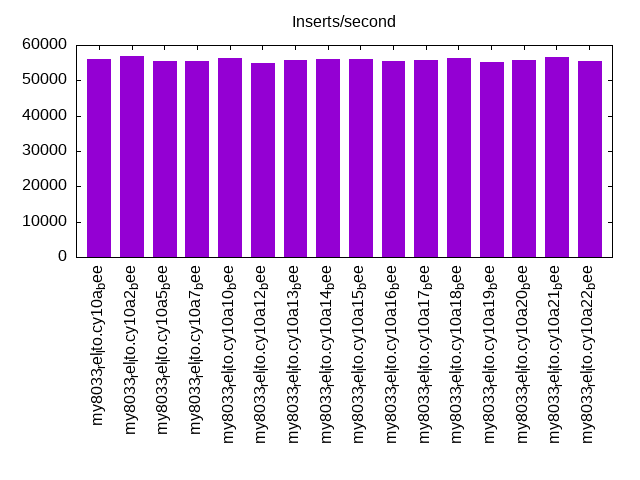
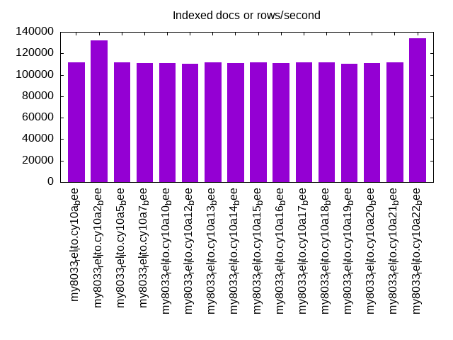
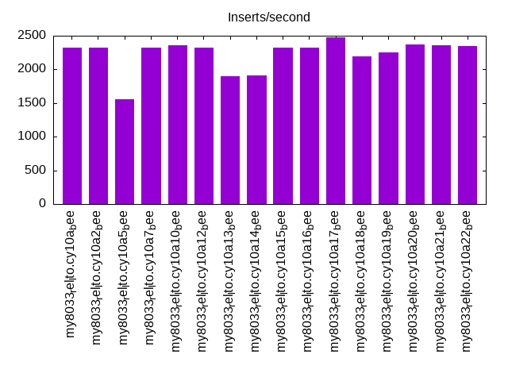

This is a report for the insert benchmark with 800M docs and 1 client(s). It is generated by scripts (bash, awk, sed) and Tufte might not be impressed. An overview of the insert benchmark is here and a short update is here. Below, by DBMS, I mean DBMS+version.config. An example is my8020.c10b40 where my means MySQL, 8020 is version 8.0.20 and c10b40 is the name for the configuration file.
The test server has 8 AMD cores, 16G RAM and an NVMe SSD. It is described here as the Beelink. The benchmark was run with 1 client and there were 1 or 3 connections per client (1 for queries or inserts without rate limits, 1+1 for rate limited inserts+deletes). There is 1 table. It loads 800M rows without secondary indexes, creates secondary indexes, then inserts 10M rows with a delete per insert to avoid growing the table. It then does 3 read+write tests for 3600s each that do queries as fast as possible with 100, 500 and then 1000 inserts/second/client concurrent with the queries and 1000 deletes/second to avoid growing the table. The database is larger than memory.
The tested DBMS are:
The numbers are inserts/s for l.i0 and l.i1, indexed docs (or rows) /s for l.x and queries/s for q*.2. The values are the average rate over the entire test for inserts (IPS) and queries (QPS). The range of values for IPS and QPS is split into 3 parts: bottom 25%, middle 50%, top 25%. Values in the bottom 25% have a red background, values in the top 25% have a green background and values in the middle have no color. A gray background is used for values that can be ignored because the DBMS did not sustain the target insert rate. Red backgrounds are not used when the minimum value is within 80% of the max value.
| dbms | l.i0 | l.x | l.i1 | q100.1 | q500.1 | q1000.1 |
|---|---|---|---|---|---|---|
| 800m.my8033_rel_lto.cy10a_bee | 56046 | 111683 | 2322 | 977 | 1050 | 963 |
| 800m.my8033_rel_lto.cy10a2_bee | 56770 | 131856 | 2321 | 970 | 1041 | 963 |
| 800m.my8033_rel_lto.cy10a5_bee | 55348 | 111466 | 1555 | 1174 | 1063 | 974 |
| 800m.my8033_rel_lto.cy10a7_bee | 55375 | 110832 | 2327 | 983 | 1044 | 962 |
| 800m.my8033_rel_lto.cy10a10_bee | 56437 | 111202 | 2363 | 977 | 1051 | 965 |
| 800m.my8033_rel_lto.cy10a12_bee | 54866 | 110222 | 2329 | 980 | 1047 | 960 |
| 800m.my8033_rel_lto.cy10a13_bee | 55753 | 111326 | 1900 | 1114 | 1055 | 966 |
| 800m.my8033_rel_lto.cy10a14_bee | 55979 | 111264 | 1909 | 1081 | 1056 | 967 |
| 800m.my8033_rel_lto.cy10a15_bee | 56109 | 111606 | 2324 | 977 | 1042 | 957 |
| 800m.my8033_rel_lto.cy10a16_bee | 55579 | 110863 | 2323 | 994 | 1047 | 964 |
| 800m.my8033_rel_lto.cy10a17_bee | 55710 | 111590 | 2473 | 1039 | 1074 | 1014 |
| 800m.my8033_rel_lto.cy10a18_bee | 56263 | 111497 | 2188 | 944 | 1025 | 930 |
| 800m.my8033_rel_lto.cy10a19_bee | 55233 | 110450 | 2255 | 946 | 1034 | 941 |
| 800m.my8033_rel_lto.cy10a20_bee | 55811 | 110971 | 2368 | 978 | 1046 | 968 |
| 800m.my8033_rel_lto.cy10a21_bee | 56517 | 111574 | 2354 | 997 | 1059 | 973 |
| 800m.my8033_rel_lto.cy10a22_bee | 55598 | 134200 | 2346 | 976 | 1052 | 967 |
This table has relative throughput, throughput for the DBMS relative to the DBMS in the first line, using the absolute throughput from the previous table.
| dbms | l.i0 | l.x | l.i1 | q100.1 | q500.1 | q1000.1 |
|---|---|---|---|---|---|---|
| 800m.my8033_rel_lto.cy10a_bee | 1.00 | 1.00 | 1.00 | 1.00 | 1.00 | 1.00 |
| 800m.my8033_rel_lto.cy10a2_bee | 1.01 | 1.18 | 1.00 | 0.99 | 0.99 | 1.00 |
| 800m.my8033_rel_lto.cy10a5_bee | 0.99 | 1.00 | 0.67 | 1.20 | 1.01 | 1.01 |
| 800m.my8033_rel_lto.cy10a7_bee | 0.99 | 0.99 | 1.00 | 1.01 | 0.99 | 1.00 |
| 800m.my8033_rel_lto.cy10a10_bee | 1.01 | 1.00 | 1.02 | 1.00 | 1.00 | 1.00 |
| 800m.my8033_rel_lto.cy10a12_bee | 0.98 | 0.99 | 1.00 | 1.00 | 1.00 | 1.00 |
| 800m.my8033_rel_lto.cy10a13_bee | 0.99 | 1.00 | 0.82 | 1.14 | 1.00 | 1.00 |
| 800m.my8033_rel_lto.cy10a14_bee | 1.00 | 1.00 | 0.82 | 1.11 | 1.01 | 1.00 |
| 800m.my8033_rel_lto.cy10a15_bee | 1.00 | 1.00 | 1.00 | 1.00 | 0.99 | 0.99 |
| 800m.my8033_rel_lto.cy10a16_bee | 0.99 | 0.99 | 1.00 | 1.02 | 1.00 | 1.00 |
| 800m.my8033_rel_lto.cy10a17_bee | 0.99 | 1.00 | 1.07 | 1.06 | 1.02 | 1.05 |
| 800m.my8033_rel_lto.cy10a18_bee | 1.00 | 1.00 | 0.94 | 0.97 | 0.98 | 0.97 |
| 800m.my8033_rel_lto.cy10a19_bee | 0.99 | 0.99 | 0.97 | 0.97 | 0.98 | 0.98 |
| 800m.my8033_rel_lto.cy10a20_bee | 1.00 | 0.99 | 1.02 | 1.00 | 1.00 | 1.01 |
| 800m.my8033_rel_lto.cy10a21_bee | 1.01 | 1.00 | 1.01 | 1.02 | 1.01 | 1.01 |
| 800m.my8033_rel_lto.cy10a22_bee | 0.99 | 1.20 | 1.01 | 1.00 | 1.00 | 1.00 |
This lists the average rate of inserts/s for the tests that do inserts concurrent with queries. For such tests the query rate is listed in the table above. The read+write tests are setup so that the insert rate should match the target rate every second. Cells that are not at least 95% of the target have a red background to indicate a failure to satisfy the target.
| dbms | q100.1 | q500.1 | q1000.1 |
|---|---|---|---|
| my8033_rel_lto.cy10a_bee | 100 | 499 | 999 |
| my8033_rel_lto.cy10a2_bee | 100 | 499 | 999 |
| my8033_rel_lto.cy10a5_bee | 100 | 499 | 998 |
| my8033_rel_lto.cy10a7_bee | 100 | 499 | 998 |
| my8033_rel_lto.cy10a10_bee | 100 | 499 | 999 |
| my8033_rel_lto.cy10a12_bee | 100 | 498 | 997 |
| my8033_rel_lto.cy10a13_bee | 100 | 499 | 998 |
| my8033_rel_lto.cy10a14_bee | 100 | 499 | 998 |
| my8033_rel_lto.cy10a15_bee | 100 | 499 | 999 |
| my8033_rel_lto.cy10a16_bee | 100 | 499 | 999 |
| my8033_rel_lto.cy10a17_bee | 100 | 499 | 997 |
| my8033_rel_lto.cy10a18_bee | 100 | 499 | 999 |
| my8033_rel_lto.cy10a19_bee | 100 | 498 | 998 |
| my8033_rel_lto.cy10a20_bee | 100 | 499 | 998 |
| my8033_rel_lto.cy10a21_bee | 99 | 498 | 996 |
| my8033_rel_lto.cy10a22_bee | 100 | 499 | 998 |
| target | 100 | 500 | 1000 |
l.i0: load without secondary indexes. Graphs for performance per 1-second interval are here.
Average throughput:
Insert response time histogram: each cell has the percentage of responses that take <= the time in the header and max is the max response time in seconds. For the max column values in the top 25% of the range have a red background and in the bottom 25% of the range have a green background. The red background is not used when the min value is within 80% of the max value.
| dbms | 256us | 1ms | 4ms | 16ms | 64ms | 256ms | 1s | 4s | 16s | gt | max |
|---|---|---|---|---|---|---|---|---|---|---|---|
| my8033_rel_lto.cy10a_bee | 99.370 | 0.495 | 0.133 | 0.003 | 0.185 | ||||||
| my8033_rel_lto.cy10a2_bee | 99.380 | 0.484 | 0.133 | 0.003 | 0.107 | ||||||
| my8033_rel_lto.cy10a5_bee | 99.367 | 0.479 | 0.151 | 0.003 | 0.144 | ||||||
| my8033_rel_lto.cy10a7_bee | 99.367 | 0.479 | 0.151 | 0.003 | 0.094 | ||||||
| my8033_rel_lto.cy10a10_bee | 99.383 | 0.468 | 0.146 | 0.003 | 0.121 | ||||||
| my8033_rel_lto.cy10a12_bee | 99.411 | 0.443 | 0.142 | 0.003 | 0.098 | ||||||
| my8033_rel_lto.cy10a13_bee | 99.370 | 0.475 | 0.151 | 0.003 | 0.240 | ||||||
| my8033_rel_lto.cy10a14_bee | 99.370 | 0.479 | 0.148 | 0.003 | 0.123 | ||||||
| my8033_rel_lto.cy10a15_bee | 99.371 | 0.479 | 0.147 | 0.003 | 0.101 | ||||||
| my8033_rel_lto.cy10a16_bee | 99.380 | 0.470 | 0.147 | 0.003 | 0.094 | ||||||
| my8033_rel_lto.cy10a17_bee | 99.369 | 0.478 | 0.150 | 0.003 | 0.190 | ||||||
| my8033_rel_lto.cy10a18_bee | 99.415 | 0.436 | 0.146 | 0.003 | 0.107 | ||||||
| my8033_rel_lto.cy10a19_bee | 99.364 | 0.483 | 0.150 | 0.003 | 0.114 | ||||||
| my8033_rel_lto.cy10a20_bee | 99.369 | 0.481 | 0.147 | 0.003 | 0.095 | ||||||
| my8033_rel_lto.cy10a21_bee | 99.375 | 0.476 | 0.146 | 0.003 | 0.100 | ||||||
| my8033_rel_lto.cy10a22_bee | 99.378 | 0.472 | 0.147 | 0.003 | 0.092 |
Performance metrics for the DBMS listed above. Some are normalized by throughput, others are not. Legend for results is here.
ips qps rps rmbps wps wmbps rpq rkbpq wpi wkbpi csps cpups cspq cpupq dbgb1 dbgb2 rss maxop p50 p99 tag 56046 0 0 0.0 351.5 21.4 0.000 0.000 0.006 0.391 6742 20.1 0.120 29 52.4 61.0 11.1 0.185 56137 51142 800m.my8033_rel_lto.cy10a_bee 56770 0 0 0.0 355.8 21.7 0.000 0.000 0.006 0.392 6830 20.2 0.120 28 52.4 61.0 11.1 0.107 56936 51444 800m.my8033_rel_lto.cy10a2_bee 55348 0 0 0.0 347.1 21.2 0.000 0.000 0.006 0.392 6656 19.9 0.120 29 52.4 61.0 11.1 0.144 55538 49891 800m.my8033_rel_lto.cy10a5_bee 55375 0 0 0.0 347.2 21.2 0.000 0.000 0.006 0.392 6660 19.9 0.120 29 52.4 61.0 11.0 0.094 55537 49744 800m.my8033_rel_lto.cy10a7_bee 56437 0 0 0.0 351.1 21.6 0.000 0.000 0.006 0.391 6821 20.2 0.121 29 52.4 61.0 11.1 0.121 56539 50842 800m.my8033_rel_lto.cy10a10_bee 54866 0 0 0.0 334.1 20.7 0.000 0.000 0.006 0.387 6576 20.1 0.120 29 52.4 85.0 11.1 0.098 54961 49742 800m.my8033_rel_lto.cy10a12_bee 55753 0 0 0.0 349.7 21.3 0.000 0.000 0.006 0.392 6758 20.1 0.121 29 52.4 61.0 11.1 0.240 55935 50044 800m.my8033_rel_lto.cy10a13_bee 55979 0 0 0.0 351.2 21.4 0.000 0.000 0.006 0.392 6737 20.0 0.120 29 52.4 61.0 11.1 0.123 56138 50291 800m.my8033_rel_lto.cy10a14_bee 56109 0 0 0.0 351.7 21.5 0.000 0.000 0.006 0.391 6753 20.1 0.120 29 52.4 61.0 11.1 0.101 56237 50534 800m.my8033_rel_lto.cy10a15_bee 55579 0 0 0.0 345.1 21.2 0.000 0.000 0.006 0.390 6673 19.9 0.120 29 52.4 61.0 11.1 0.094 55750 49546 800m.my8033_rel_lto.cy10a16_bee 55710 0 0 0.0 285.7 17.5 0.000 0.000 0.005 0.322 6739 20.0 0.121 29 52.4 61.0 11.1 0.190 55863 50038 800m.my8033_rel_lto.cy10a17_bee 56263 0 0 0.0 346.8 21.5 0.000 0.000 0.006 0.390 6905 20.1 0.123 29 52.4 61.0 11.2 0.107 56439 50341 800m.my8033_rel_lto.cy10a18_bee 55233 0 0 0.0 346.3 21.1 0.000 0.000 0.006 0.392 6649 19.9 0.120 29 52.4 61.0 11.1 0.114 55374 49773 800m.my8033_rel_lto.cy10a19_bee 55811 0 0 0.0 350.0 21.3 0.000 0.000 0.006 0.392 6762 20.0 0.121 29 52.4 61.0 11.1 0.095 55938 50244 800m.my8033_rel_lto.cy10a20_bee 56517 0 0 0.0 354.5 21.6 0.000 0.000 0.006 0.392 6887 20.1 0.122 28 52.4 61.0 11.1 0.100 56735 50689 800m.my8033_rel_lto.cy10a21_bee 55598 0 0 0.0 346.1 21.2 0.000 0.000 0.006 0.391 6730 19.9 0.121 29 52.4 61.0 11.1 0.092 55782 49851 800m.my8033_rel_lto.cy10a22_bee
l.x: create secondary indexes.
Average throughput:
Performance metrics for the DBMS listed above. Some are normalized by throughput, others are not. Legend for results is here.
ips qps rps rmbps wps wmbps rpq rkbpq wpi wkbpi csps cpups cspq cpupq dbgb1 dbgb2 rss maxop p50 p99 tag 111683 0 1800 168.7 2214.8 150.3 0.016 1.547 0.020 1.378 8851 43.8 0.079 31 117.2 125.8 10.4 0.011 NA NA 800m.my8033_rel_lto.cy10a_bee 131856 0 2132 200.0 2615.8 177.7 0.016 1.554 0.020 1.380 10380 42.9 0.079 26 117.2 125.8 10.4 0.016 NA NA 800m.my8033_rel_lto.cy10a2_bee 111466 0 1800 168.8 2213.9 150.1 0.016 1.551 0.020 1.379 8874 43.7 0.080 31 117.2 125.8 10.3 0.012 NA NA 800m.my8033_rel_lto.cy10a5_bee 110832 0 1792 167.8 2184.9 149.0 0.016 1.551 0.020 1.377 8821 43.7 0.080 32 117.2 125.8 10.3 0.012 NA NA 800m.my8033_rel_lto.cy10a7_bee 111202 0 1795 168.4 2211.2 149.8 0.016 1.551 0.020 1.379 8763 43.5 0.079 31 117.2 125.8 10.3 0.015 NA NA 800m.my8033_rel_lto.cy10a10_bee 110222 0 1773 166.2 2193.5 148.4 0.016 1.544 0.020 1.379 8844 43.3 0.080 31 117.2 149.8 10.3 0.013 NA NA 800m.my8033_rel_lto.cy10a12_bee 111326 0 1795 168.4 2203.6 149.8 0.016 1.549 0.020 1.377 8849 43.7 0.079 31 117.2 125.8 10.4 0.016 NA NA 800m.my8033_rel_lto.cy10a13_bee 111264 0 1797 168.5 2191.0 149.6 0.016 1.551 0.020 1.377 8829 43.8 0.079 31 117.2 125.8 10.3 0.016 NA NA 800m.my8033_rel_lto.cy10a14_bee 111606 0 1799 168.7 2212.0 150.1 0.016 1.548 0.020 1.377 8878 43.7 0.080 31 117.2 125.8 10.3 0.022 NA NA 800m.my8033_rel_lto.cy10a15_bee 110863 0 1792 168.0 2231.8 149.3 0.016 1.552 0.020 1.379 9145 43.7 0.082 32 117.2 125.8 10.3 0.016 NA NA 800m.my8033_rel_lto.cy10a16_bee 111590 0 1802 168.9 2029.2 142.2 0.016 1.550 0.018 1.305 9453 44.0 0.085 32 117.2 125.8 10.3 0.020 NA NA 800m.my8033_rel_lto.cy10a17_bee 111497 0 1802 169.1 2198.6 150.0 0.016 1.553 0.020 1.377 7424 43.6 0.067 31 117.2 125.8 10.4 0.011 NA NA 800m.my8033_rel_lto.cy10a18_bee 110450 0 1783 167.3 2159.0 148.7 0.016 1.551 0.020 1.379 8742 43.7 0.079 32 117.2 125.8 10.3 0.012 NA NA 800m.my8033_rel_lto.cy10a19_bee 110971 0 1791 168.0 2203.2 149.3 0.016 1.550 0.020 1.378 8850 43.7 0.080 32 117.2 125.8 10.4 0.017 NA NA 800m.my8033_rel_lto.cy10a20_bee 111574 0 1804 169.1 2209.1 150.3 0.016 1.552 0.020 1.379 9050 43.8 0.081 31 117.2 125.8 10.4 0.018 NA NA 800m.my8033_rel_lto.cy10a21_bee 134200 0 2165 203.1 2673.4 180.6 0.016 1.550 0.020 1.378 10484 42.7 0.078 25 117.2 125.8 10.3 0.016 NA NA 800m.my8033_rel_lto.cy10a22_bee
l.i1: continue load after secondary indexes created. Graphs for performance per 1-second interval are here.
Average throughput:
Insert response time histogram: each cell has the percentage of responses that take <= the time in the header and max is the max response time in seconds. For the max column values in the top 25% of the range have a red background and in the bottom 25% of the range have a green background. The red background is not used when the min value is within 80% of the max value.
| dbms | 256us | 1ms | 4ms | 16ms | 64ms | 256ms | 1s | 4s | 16s | gt | max |
|---|---|---|---|---|---|---|---|---|---|---|---|
| my8033_rel_lto.cy10a_bee | 56.407 | 40.114 | 3.479 | 0.236 | |||||||
| my8033_rel_lto.cy10a2_bee | 56.697 | 39.678 | 3.624 | 0.001 | 0.335 | ||||||
| my8033_rel_lto.cy10a5_bee | 0.282 | 91.920 | 7.797 | 0.001 | 0.284 | ||||||
| my8033_rel_lto.cy10a7_bee | 57.166 | 39.526 | 3.304 | 0.003 | 0.344 | ||||||
| my8033_rel_lto.cy10a10_bee | 56.983 | 39.781 | 3.236 | 0.001 | 0.426 | ||||||
| my8033_rel_lto.cy10a12_bee | 56.797 | 39.861 | 3.340 | 0.001 | 0.363 | ||||||
| my8033_rel_lto.cy10a13_bee | 41.791 | 51.532 | 6.677 | 0.255 | |||||||
| my8033_rel_lto.cy10a14_bee | 39.216 | 54.819 | 5.965 | 0.245 | |||||||
| my8033_rel_lto.cy10a15_bee | 57.009 | 39.498 | 3.492 | 0.001 | 0.345 | ||||||
| my8033_rel_lto.cy10a16_bee | 55.822 | 40.886 | 3.292 | 0.001 | 0.287 | ||||||
| my8033_rel_lto.cy10a17_bee | 58.109 | 39.610 | 2.280 | 0.002 | 0.502 | ||||||
| my8033_rel_lto.cy10a18_bee | 49.520 | 47.088 | 3.392 | 0.232 | |||||||
| my8033_rel_lto.cy10a19_bee | 55.287 | 40.883 | 3.829 | 0.002 | 0.290 | ||||||
| my8033_rel_lto.cy10a20_bee | 57.585 | 39.082 | 3.333 | 0.001 | 0.301 | ||||||
| my8033_rel_lto.cy10a21_bee | 58.111 | 38.581 | 3.308 | 0.001 | 0.487 | ||||||
| my8033_rel_lto.cy10a22_bee | 56.556 | 40.164 | 3.279 | 0.001 | 0.481 |
Delete response time histogram: each cell has the percentage of responses that take <= the time in the header and max is the max response time in seconds. For the max column values in the top 25% of the range have a red background and in the bottom 25% of the range have a green background. The red background is not used when the min value is within 80% of the max value.
| dbms | 256us | 1ms | 4ms | 16ms | 64ms | 256ms | 1s | 4s | 16s | gt | max |
|---|---|---|---|---|---|---|---|---|---|---|---|
| my8033_rel_lto.cy10a_bee | 18.131 | 81.200 | 0.667 | 0.002 | 0.072 | ||||||
| my8033_rel_lto.cy10a2_bee | 20.555 | 78.785 | 0.658 | 0.003 | 0.148 | ||||||
| my8033_rel_lto.cy10a5_bee | 40.672 | 55.015 | 4.312 | 0.202 | |||||||
| my8033_rel_lto.cy10a7_bee | 16.832 | 82.510 | 0.654 | 0.003 | 0.100 | ||||||
| my8033_rel_lto.cy10a10_bee | 21.890 | 77.543 | 0.564 | 0.003 | 0.217 | ||||||
| my8033_rel_lto.cy10a12_bee | 18.319 | 81.068 | 0.611 | 0.003 | 0.159 | ||||||
| my8033_rel_lto.cy10a13_bee | 22.027 | 71.806 | 6.123 | 0.043 | 0.150 | ||||||
| my8033_rel_lto.cy10a14_bee | 53.302 | 41.221 | 5.476 | 0.211 | |||||||
| my8033_rel_lto.cy10a15_bee | 18.108 | 81.179 | 0.710 | 0.004 | 0.152 | ||||||
| my8033_rel_lto.cy10a16_bee | 14.346 | 85.198 | 0.453 | 0.004 | 0.109 | ||||||
| my8033_rel_lto.cy10a17_bee | 15.130 | 84.135 | 0.731 | 0.005 | 0.102 | ||||||
| my8033_rel_lto.cy10a18_bee | 22.460 | 76.684 | 0.852 | 0.004 | 0.106 | ||||||
| my8033_rel_lto.cy10a19_bee | 17.419 | 81.623 | 0.952 | 0.006 | 0.123 | ||||||
| my8033_rel_lto.cy10a20_bee | 20.548 | 78.873 | 0.577 | 0.003 | 0.104 | ||||||
| my8033_rel_lto.cy10a21_bee | 21.795 | 77.581 | 0.620 | 0.005 | 0.142 | ||||||
| my8033_rel_lto.cy10a22_bee | 22.073 | 77.340 | 0.583 | 0.006 | 0.105 |
Performance metrics for the DBMS listed above. Some are normalized by throughput, others are not. Legend for results is here.
ips qps rps rmbps wps wmbps rpq rkbpq wpi wkbpi csps cpups cspq cpupq dbgb1 dbgb2 rss maxop p50 p99 tag 2322 0 8601 134.4 14310.3 388.0 3.704 59.260 6.162 171.099 60184 26.2 25.916 903 153.9 164.0 10.7 0.236 2347 699 800m.my8033_rel_lto.cy10a_bee 2321 0 8968 140.1 15175.1 409.5 3.864 61.828 6.539 180.686 62743 26.5 27.036 914 154.2 164.0 10.7 0.335 2248 699 800m.my8033_rel_lto.cy10a2_bee 1555 0 10479 163.7 15681.4 415.0 6.737 107.790 10.082 273.218 67300 21.6 43.269 1111 139.6 148.2 10.7 0.284 1648 699 800m.my8033_rel_lto.cy10a5_bee 2327 0 8659 135.3 14353.3 389.5 3.721 59.530 6.168 171.390 60586 26.1 26.034 897 153.8 164.0 10.7 0.344 2347 649 800m.my8033_rel_lto.cy10a7_bee 2363 0 8698 135.9 14522.5 394.1 3.681 58.897 6.146 170.789 81241 27.0 34.382 914 153.9 164.0 10.8 0.426 2347 699 800m.my8033_rel_lto.cy10a10_bee 2329 0 8624 134.7 14228.7 386.1 3.703 59.251 6.110 169.757 59993 26.2 25.761 900 153.7 187.8 10.7 0.363 2348 699 800m.my8033_rel_lto.cy10a12_bee 1900 0 10144 158.5 16169.0 432.5 5.340 85.440 8.512 233.137 86403 28.0 45.485 1179 148.2 157.2 10.8 0.255 2048 599 800m.my8033_rel_lto.cy10a13_bee 1909 0 12396 193.7 18527.6 490.8 6.493 103.890 9.705 263.232 78544 25.4 41.142 1064 146.7 155.6 10.7 0.245 2048 699 800m.my8033_rel_lto.cy10a14_bee 2324 0 8598 134.3 14319.9 388.3 3.699 59.178 6.160 171.039 60388 26.2 25.979 902 153.7 163.9 10.7 0.345 2347 699 800m.my8033_rel_lto.cy10a15_bee 2323 0 8324 130.1 12867.1 352.2 3.583 57.334 5.539 155.256 55560 25.9 23.919 892 153.1 163.7 10.7 0.287 2397 699 800m.my8033_rel_lto.cy10a16_bee 2473 0 9194 143.7 12238.8 225.1 3.718 59.492 4.950 93.206 66997 27.2 27.095 880 153.6 163.8 10.7 0.502 2497 700 800m.my8033_rel_lto.cy10a17_bee 2188 0 8071 126.1 13495.4 365.8 3.689 59.020 6.168 171.174 84062 25.9 38.418 947 153.8 164.0 10.7 0.232 2198 650 800m.my8033_rel_lto.cy10a18_bee 2255 0 8360 130.6 15871.1 426.0 3.708 59.322 7.039 193.494 64536 26.1 28.623 926 153.9 164.1 10.7 0.290 2297 650 800m.my8033_rel_lto.cy10a19_bee 2368 0 8714 136.2 14527.6 394.0 3.680 58.883 6.135 170.384 81845 26.9 34.565 909 153.9 164.1 10.8 0.301 2347 699 800m.my8033_rel_lto.cy10a20_bee 2354 0 8732 136.4 14551.0 394.4 3.710 59.352 6.181 171.572 82134 26.9 34.891 914 153.7 163.9 10.8 0.487 2397 699 800m.my8033_rel_lto.cy10a21_bee 2346 0 8675 135.5 14472.6 392.6 3.698 59.173 6.170 171.395 81018 27.0 34.539 921 153.8 164.0 10.8 0.481 2347 699 800m.my8033_rel_lto.cy10a22_bee
q100.1: range queries with 100 insert/s per client. Graphs for performance per 1-second interval are here.
Average throughput:
Query response time histogram: each cell has the percentage of responses that take <= the time in the header and max is the max response time in seconds. For max values in the top 25% of the range have a red background and in the bottom 25% of the range have a green background. The red background is not used when the min value is within 80% of the max value.
| dbms | 256us | 1ms | 4ms | 16ms | 64ms | 256ms | 1s | 4s | 16s | gt | max |
|---|---|---|---|---|---|---|---|---|---|---|---|
| my8033_rel_lto.cy10a_bee | 4.742 | 38.688 | 55.233 | 1.309 | 0.028 | 0.052 | |||||
| my8033_rel_lto.cy10a2_bee | 4.900 | 38.127 | 55.435 | 1.509 | 0.029 | nonzero | 0.075 | ||||
| my8033_rel_lto.cy10a5_bee | 5.586 | 44.297 | 49.923 | 0.193 | 0.001 | 0.042 | |||||
| my8033_rel_lto.cy10a7_bee | 4.788 | 38.677 | 55.171 | 1.332 | 0.032 | nonzero | 0.068 | ||||
| my8033_rel_lto.cy10a10_bee | 6.280 | 37.364 | 54.813 | 1.523 | 0.020 | 0.062 | |||||
| my8033_rel_lto.cy10a12_bee | 4.920 | 38.579 | 55.281 | 1.181 | 0.040 | nonzero | 0.066 | ||||
| my8033_rel_lto.cy10a13_bee | 5.646 | 42.889 | 50.967 | 0.492 | 0.006 | 0.052 | |||||
| my8033_rel_lto.cy10a14_bee | 5.211 | 41.796 | 52.251 | 0.731 | 0.010 | 0.051 | |||||
| my8033_rel_lto.cy10a15_bee | 4.896 | 38.532 | 55.249 | 1.294 | 0.029 | 0.057 | |||||
| my8033_rel_lto.cy10a16_bee | 4.984 | 39.324 | 54.601 | 1.062 | 0.028 | 0.056 | |||||
| my8033_rel_lto.cy10a17_bee | 5.055 | 39.049 | 55.129 | 0.760 | 0.007 | 0.056 | |||||
| my8033_rel_lto.cy10a18_bee | 6.908 | 36.326 | 54.625 | 2.133 | 0.009 | 0.043 | |||||
| my8033_rel_lto.cy10a19_bee | 4.775 | 38.370 | 55.155 | 1.661 | 0.039 | 0.055 | |||||
| my8033_rel_lto.cy10a20_bee | 5.778 | 37.747 | 55.068 | 1.379 | 0.028 | 0.054 | |||||
| my8033_rel_lto.cy10a21_bee | 7.388 | 36.726 | 54.545 | 1.315 | 0.025 | nonzero | 0.070 | ||||
| my8033_rel_lto.cy10a22_bee | 6.385 | 37.256 | 54.840 | 1.500 | 0.019 | nonzero | 0.065 |
Insert response time histogram: each cell has the percentage of responses that take <= the time in the header and max is the max response time in seconds. For max values in the top 25% of the range have a red background and in the bottom 25% of the range have a green background. The red background is not used when the min value is within 80% of the max value.
| dbms | 256us | 1ms | 4ms | 16ms | 64ms | 256ms | 1s | 4s | 16s | gt | max |
|---|---|---|---|---|---|---|---|---|---|---|---|
| my8033_rel_lto.cy10a_bee | 35.097 | 62.333 | 2.569 | 0.125 | |||||||
| my8033_rel_lto.cy10a2_bee | 40.181 | 57.694 | 2.125 | 0.127 | |||||||
| my8033_rel_lto.cy10a5_bee | 2.361 | 97.639 | 0.058 | ||||||||
| my8033_rel_lto.cy10a7_bee | 39.708 | 57.278 | 3.014 | 0.140 | |||||||
| my8033_rel_lto.cy10a10_bee | 33.236 | 66.125 | 0.639 | 0.094 | |||||||
| my8033_rel_lto.cy10a12_bee | 36.944 | 60.861 | 2.194 | 0.134 | |||||||
| my8033_rel_lto.cy10a13_bee | 41.347 | 58.167 | 0.486 | 0.102 | |||||||
| my8033_rel_lto.cy10a14_bee | 34.458 | 64.153 | 1.389 | 0.123 | |||||||
| my8033_rel_lto.cy10a15_bee | 35.708 | 61.347 | 2.944 | 0.124 | |||||||
| my8033_rel_lto.cy10a16_bee | 27.847 | 70.736 | 1.417 | 0.116 | |||||||
| my8033_rel_lto.cy10a17_bee | 35.986 | 63.764 | 0.250 | 0.087 | |||||||
| my8033_rel_lto.cy10a18_bee | 31.764 | 67.625 | 0.611 | 0.097 | |||||||
| my8033_rel_lto.cy10a19_bee | 34.444 | 62.542 | 3.014 | 0.141 | |||||||
| my8033_rel_lto.cy10a20_bee | 33.556 | 63.722 | 2.722 | 0.139 | |||||||
| my8033_rel_lto.cy10a21_bee | 38.361 | 60.167 | 1.472 | 0.115 | |||||||
| my8033_rel_lto.cy10a22_bee | 33.736 | 65.569 | 0.694 | 0.107 |
Delete response time histogram: each cell has the percentage of responses that take <= the time in the header and max is the max response time in seconds. For max values in the top 25% of the range have a red background and in the bottom 25% of the range have a green background. The red background is not used when the min value is within 80% of the max value.
| dbms | 256us | 1ms | 4ms | 16ms | 64ms | 256ms | 1s | 4s | 16s | gt | max |
|---|---|---|---|---|---|---|---|---|---|---|---|
| my8033_rel_lto.cy10a_bee | 46.250 | 52.597 | 1.153 | 0.046 | |||||||
| my8033_rel_lto.cy10a2_bee | 52.875 | 46.306 | 0.819 | 0.050 | |||||||
| my8033_rel_lto.cy10a5_bee | 97.139 | 2.861 | 0.039 | ||||||||
| my8033_rel_lto.cy10a7_bee | 48.708 | 50.708 | 0.583 | 0.044 | |||||||
| my8033_rel_lto.cy10a10_bee | 47.389 | 51.403 | 1.194 | 0.014 | 0.065 | ||||||
| my8033_rel_lto.cy10a12_bee | 49.417 | 50.083 | 0.486 | 0.014 | 0.076 | ||||||
| my8033_rel_lto.cy10a13_bee | 79.708 | 20.014 | 0.278 | 0.054 | |||||||
| my8033_rel_lto.cy10a14_bee | 85.792 | 12.333 | 1.875 | 0.123 | |||||||
| my8033_rel_lto.cy10a15_bee | 48.014 | 50.694 | 1.292 | 0.052 | |||||||
| my8033_rel_lto.cy10a16_bee | 27.875 | 71.417 | 0.708 | 0.054 | |||||||
| my8033_rel_lto.cy10a17_bee | 48.708 | 50.556 | 0.736 | 0.050 | |||||||
| my8033_rel_lto.cy10a18_bee | 45.319 | 53.708 | 0.972 | 0.039 | |||||||
| my8033_rel_lto.cy10a19_bee | 43.319 | 54.861 | 1.806 | 0.014 | 0.066 | ||||||
| my8033_rel_lto.cy10a20_bee | 47.181 | 51.139 | 1.667 | 0.014 | 0.067 | ||||||
| my8033_rel_lto.cy10a21_bee | 52.972 | 46.319 | 0.708 | 0.051 | |||||||
| my8033_rel_lto.cy10a22_bee | 47.264 | 51.417 | 1.319 | 0.055 |
Performance metrics for the DBMS listed above. Some are normalized by throughput, others are not. Legend for results is here.
ips qps rps rmbps wps wmbps rpq rkbpq wpi wkbpi csps cpups cspq cpupq dbgb1 dbgb2 rss maxop p50 p99 tag 100 977 11044 172.6 8780.4 224.5 11.302 180.824 87.980 2303.235 49753 16.6 50.914 1359 153.9 164.0 10.7 0.052 943 799 800m.my8033_rel_lto.cy10a_bee 100 970 11592 181.1 9545.3 243.6 11.947 191.150 95.644 2499.289 52748 17.1 54.363 1410 154.2 164.0 10.7 0.075 943 767 800m.my8033_rel_lto.cy10a2_bee 100 1174 6330 98.9 1210.5 30.8 5.390 86.233 12.141 316.742 20215 7.4 17.212 504 139.6 148.2 10.7 0.042 1183 975 800m.my8033_rel_lto.cy10a5_bee 100 983 11107 173.5 8775.1 224.6 11.300 180.805 88.016 2306.755 49967 16.4 50.836 1335 153.8 164.0 10.7 0.068 944 783 800m.my8033_rel_lto.cy10a7_bee 100 977 11118 173.7 8868.9 226.8 11.375 182.007 88.956 2329.676 68098 17.1 69.672 1400 153.9 164.0 10.7 0.062 959 750 800m.my8033_rel_lto.cy10a10_bee 100 980 11041 172.5 8278.9 211.9 11.268 180.287 83.122 2178.536 48356 16.2 49.348 1323 153.7 187.8 10.7 0.066 943 752 800m.my8033_rel_lto.cy10a12_bee 100 1114 7571 118.3 3347.6 86.0 6.797 108.757 33.543 882.880 34148 10.3 30.659 740 148.2 157.2 10.7 0.052 1152 847 800m.my8033_rel_lto.cy10a13_bee 100 1081 8876 138.7 5116.5 130.9 8.207 131.320 51.319 1344.493 35747 11.7 33.056 866 146.7 155.6 10.7 0.051 1151 863 800m.my8033_rel_lto.cy10a14_bee 100 977 11024 172.3 8755.2 223.8 11.286 180.581 87.727 2296.439 49724 16.5 50.905 1351 153.7 163.9 10.7 0.057 943 751 800m.my8033_rel_lto.cy10a15_bee 100 994 10119 158.1 7392.1 189.7 10.180 162.881 74.144 1947.968 44453 15.5 44.722 1247 153.1 163.7 10.7 0.056 959 735 800m.my8033_rel_lto.cy10a16_bee 100 1039 11223 175.4 6899.3 113.3 10.804 172.865 69.200 1163.952 52057 16.1 50.112 1240 153.6 163.8 10.7 0.056 1007 846 800m.my8033_rel_lto.cy10a17_bee 100 944 11129 173.9 9070.3 231.7 11.787 188.590 90.885 2377.197 74954 17.4 79.384 1474 153.8 164.0 10.7 0.043 927 735 800m.my8033_rel_lto.cy10a18_bee 100 946 10924 170.7 10509.5 267.7 11.550 184.800 105.411 2749.139 54805 17.1 57.946 1446 153.9 164.1 10.7 0.055 927 703 800m.my8033_rel_lto.cy10a19_bee 100 978 11063 172.9 8809.4 225.2 11.315 181.048 88.270 2310.725 67972 17.0 69.523 1391 153.9 164.1 10.7 0.054 959 751 800m.my8033_rel_lto.cy10a20_bee 99 997 11126 173.8 8739.3 223.4 11.155 178.474 87.920 2301.516 67910 16.6 68.087 1331 153.7 163.9 10.7 0.070 975 751 800m.my8033_rel_lto.cy10a21_bee 100 976 11077 173.1 8850.2 226.3 11.351 181.609 88.680 2322.335 67868 17.1 69.544 1402 153.8 164.0 10.7 0.065 959 751 800m.my8033_rel_lto.cy10a22_bee
q500.1: range queries with 500 insert/s per client. Graphs for performance per 1-second interval are here.
Average throughput:
Query response time histogram: each cell has the percentage of responses that take <= the time in the header and max is the max response time in seconds. For max values in the top 25% of the range have a red background and in the bottom 25% of the range have a green background. The red background is not used when the min value is within 80% of the max value.
| dbms | 256us | 1ms | 4ms | 16ms | 64ms | 256ms | 1s | 4s | 16s | gt | max |
|---|---|---|---|---|---|---|---|---|---|---|---|
| my8033_rel_lto.cy10a_bee | 5.066 | 39.664 | 54.421 | 0.841 | 0.009 | 0.053 | |||||
| my8033_rel_lto.cy10a2_bee | 4.937 | 39.656 | 54.501 | 0.894 | 0.011 | nonzero | 0.070 | ||||
| my8033_rel_lto.cy10a5_bee | 4.972 | 39.577 | 54.711 | 0.734 | 0.006 | nonzero | 0.077 | ||||
| my8033_rel_lto.cy10a7_bee | 4.790 | 39.675 | 54.704 | 0.816 | 0.015 | 0.050 | |||||
| my8033_rel_lto.cy10a10_bee | 5.878 | 39.054 | 54.115 | 0.946 | 0.007 | 0.055 | |||||
| my8033_rel_lto.cy10a12_bee | 5.027 | 39.735 | 54.445 | 0.779 | 0.015 | nonzero | 0.088 | ||||
| my8033_rel_lto.cy10a13_bee | 5.501 | 39.456 | 54.267 | 0.768 | 0.008 | 0.054 | |||||
| my8033_rel_lto.cy10a14_bee | 5.176 | 39.205 | 54.816 | 0.796 | 0.006 | 0.049 | |||||
| my8033_rel_lto.cy10a15_bee | 4.869 | 39.739 | 54.537 | 0.846 | 0.009 | 0.051 | |||||
| my8033_rel_lto.cy10a16_bee | 4.972 | 39.970 | 54.261 | 0.786 | 0.010 | 0.050 | |||||
| my8033_rel_lto.cy10a17_bee | 4.759 | 40.118 | 54.599 | 0.520 | 0.003 | 0.049 | |||||
| my8033_rel_lto.cy10a18_bee | 5.673 | 39.127 | 54.068 | 1.127 | 0.005 | 0.040 | |||||
| my8033_rel_lto.cy10a19_bee | 5.050 | 39.570 | 54.382 | 0.987 | 0.011 | 0.050 | |||||
| my8033_rel_lto.cy10a20_bee | 5.575 | 39.120 | 54.447 | 0.848 | 0.010 | 0.048 | |||||
| my8033_rel_lto.cy10a21_bee | 6.967 | 38.063 | 54.115 | 0.844 | 0.010 | 0.049 | |||||
| my8033_rel_lto.cy10a22_bee | 6.121 | 38.857 | 54.064 | 0.951 | 0.007 | 0.048 |
Insert response time histogram: each cell has the percentage of responses that take <= the time in the header and max is the max response time in seconds. For max values in the top 25% of the range have a red background and in the bottom 25% of the range have a green background. The red background is not used when the min value is within 80% of the max value.
| dbms | 256us | 1ms | 4ms | 16ms | 64ms | 256ms | 1s | 4s | 16s | gt | max |
|---|---|---|---|---|---|---|---|---|---|---|---|
| my8033_rel_lto.cy10a_bee | 67.533 | 32.392 | 0.075 | 0.097 | |||||||
| my8033_rel_lto.cy10a2_bee | 65.192 | 34.708 | 0.100 | 0.086 | |||||||
| my8033_rel_lto.cy10a5_bee | 8.053 | 91.597 | 0.350 | 0.105 | |||||||
| my8033_rel_lto.cy10a7_bee | 66.458 | 32.750 | 0.792 | 0.119 | |||||||
| my8033_rel_lto.cy10a10_bee | 63.650 | 36.261 | 0.089 | 0.083 | |||||||
| my8033_rel_lto.cy10a12_bee | 65.344 | 33.444 | 1.211 | 0.130 | |||||||
| my8033_rel_lto.cy10a13_bee | 91.258 | 8.644 | 0.097 | 0.146 | |||||||
| my8033_rel_lto.cy10a14_bee | 85.258 | 14.697 | 0.044 | 0.097 | |||||||
| my8033_rel_lto.cy10a15_bee | 67.917 | 31.919 | 0.164 | 0.110 | |||||||
| my8033_rel_lto.cy10a16_bee | 68.361 | 31.392 | 0.247 | 0.107 | |||||||
| my8033_rel_lto.cy10a17_bee | 68.653 | 31.308 | 0.039 | 0.098 | |||||||
| my8033_rel_lto.cy10a18_bee | 55.783 | 44.158 | 0.058 | 0.096 | |||||||
| my8033_rel_lto.cy10a19_bee | 67.200 | 32.592 | 0.208 | 0.111 | |||||||
| my8033_rel_lto.cy10a20_bee | 69.250 | 30.689 | 0.061 | 0.094 | |||||||
| my8033_rel_lto.cy10a21_bee | 70.167 | 29.700 | 0.133 | 0.123 | |||||||
| my8033_rel_lto.cy10a22_bee | 63.794 | 36.133 | 0.072 | 0.108 |
Delete response time histogram: each cell has the percentage of responses that take <= the time in the header and max is the max response time in seconds. For max values in the top 25% of the range have a red background and in the bottom 25% of the range have a green background. The red background is not used when the min value is within 80% of the max value.
| dbms | 256us | 1ms | 4ms | 16ms | 64ms | 256ms | 1s | 4s | 16s | gt | max |
|---|---|---|---|---|---|---|---|---|---|---|---|
| my8033_rel_lto.cy10a_bee | 92.878 | 6.967 | 0.156 | 0.036 | |||||||
| my8033_rel_lto.cy10a2_bee | 92.325 | 7.597 | 0.078 | 0.043 | |||||||
| my8033_rel_lto.cy10a5_bee | 97.622 | 2.261 | 0.117 | 0.096 | |||||||
| my8033_rel_lto.cy10a7_bee | 92.094 | 7.697 | 0.208 | 0.033 | |||||||
| my8033_rel_lto.cy10a10_bee | 92.742 | 7.111 | 0.147 | 0.031 | |||||||
| my8033_rel_lto.cy10a12_bee | 92.508 | 7.464 | 0.028 | 0.056 | |||||||
| my8033_rel_lto.cy10a13_bee | 92.142 | 7.789 | 0.069 | 0.029 | |||||||
| my8033_rel_lto.cy10a14_bee | 96.636 | 3.289 | 0.075 | 0.102 | |||||||
| my8033_rel_lto.cy10a15_bee | 92.317 | 7.628 | 0.056 | 0.030 | |||||||
| my8033_rel_lto.cy10a16_bee | 52.456 | 47.458 | 0.086 | 0.042 | |||||||
| my8033_rel_lto.cy10a17_bee | 90.667 | 9.281 | 0.053 | 0.025 | |||||||
| my8033_rel_lto.cy10a18_bee | 91.231 | 8.672 | 0.097 | 0.060 | |||||||
| my8033_rel_lto.cy10a19_bee | 91.392 | 8.236 | 0.369 | 0.003 | 0.069 | ||||||
| my8033_rel_lto.cy10a20_bee | 93.392 | 6.558 | 0.050 | 0.032 | |||||||
| my8033_rel_lto.cy10a21_bee | 94.500 | 5.425 | 0.075 | 0.025 | |||||||
| my8033_rel_lto.cy10a22_bee | 93.042 | 6.847 | 0.108 | 0.003 | 0.104 |
Performance metrics for the DBMS listed above. Some are normalized by throughput, others are not. Legend for results is here.
ips qps rps rmbps wps wmbps rpq rkbpq wpi wkbpi csps cpups cspq cpupq dbgb1 dbgb2 rss maxop p50 p99 tag 499 1050 8999 140.6 5393.8 140.1 8.575 137.198 10.803 287.377 36661 12.7 34.932 968 153.9 164.0 10.7 0.053 1055 990 800m.my8033_rel_lto.cy10a_bee 499 1041 8986 140.4 5551.2 144.2 8.634 138.144 11.122 295.939 37097 12.9 35.642 992 154.2 164.0 10.7 0.070 1039 975 800m.my8033_rel_lto.cy10a2_bee 499 1063 8749 136.7 4749.9 122.0 8.228 131.646 9.526 250.581 34548 11.3 32.491 850 139.6 148.2 10.7 0.077 1071 1007 800m.my8033_rel_lto.cy10a5_bee 499 1044 9008 140.7 5392.7 140.3 8.630 138.085 10.814 288.120 36797 12.6 35.257 966 153.8 164.0 10.7 0.050 1039 975 800m.my8033_rel_lto.cy10a7_bee 499 1051 9010 140.8 5404.2 140.5 8.573 137.173 10.834 288.537 43340 12.9 41.237 982 153.9 164.0 10.7 0.055 1055 989 800m.my8033_rel_lto.cy10a10_bee 498 1047 8988 140.4 5110.1 133.0 8.587 137.399 10.257 273.323 35679 12.6 34.087 963 153.7 187.8 10.7 0.088 1055 959 800m.my8033_rel_lto.cy10a12_bee 499 1055 8753 136.8 4975.1 128.3 8.297 132.747 9.974 263.478 40689 12.3 38.567 933 148.2 157.2 10.7 0.054 1055 991 800m.my8033_rel_lto.cy10a13_bee 499 1056 8901 139.1 5075.6 131.0 8.433 134.930 10.176 268.895 35645 11.8 33.770 894 146.7 155.6 10.7 0.049 1055 991 800m.my8033_rel_lto.cy10a14_bee 499 1042 8967 140.1 5394.1 140.1 8.604 137.666 10.808 287.508 36612 12.6 35.130 967 153.7 163.9 10.7 0.051 1039 975 800m.my8033_rel_lto.cy10a15_bee 499 1047 8780 137.2 5070.3 132.0 8.383 134.130 10.167 270.955 35358 12.5 33.761 955 153.1 163.7 10.7 0.050 1055 990 800m.my8033_rel_lto.cy10a16_bee 499 1074 9108 142.3 4303.5 73.1 8.477 135.639 8.624 149.931 38355 12.6 35.699 938 153.6 163.8 10.7 0.049 1071 1021 800m.my8033_rel_lto.cy10a17_bee 499 1025 8889 138.9 5420.4 140.9 8.670 138.715 10.856 288.867 46171 12.9 45.032 1007 153.8 164.0 10.7 0.040 1023 959 800m.my8033_rel_lto.cy10a18_bee 498 1034 8939 139.7 6291.3 162.6 8.646 138.331 12.623 334.028 39342 12.8 38.052 990 153.9 164.1 10.7 0.050 1039 959 800m.my8033_rel_lto.cy10a19_bee 499 1046 8987 140.4 5395.3 140.2 8.590 137.447 10.812 287.660 43048 12.8 41.147 979 153.9 164.1 10.7 0.048 1039 975 800m.my8033_rel_lto.cy10a20_bee 498 1059 9056 141.5 5400.1 140.3 8.549 136.780 10.837 288.267 43468 12.8 41.035 967 153.7 163.9 10.7 0.049 1055 991 800m.my8033_rel_lto.cy10a21_bee 499 1052 9010 140.8 5401.0 140.4 8.562 136.994 10.824 288.190 43313 12.8 41.160 973 153.8 164.0 10.7 0.048 1055 991 800m.my8033_rel_lto.cy10a22_bee
q1000.1: range queries with 1000 insert/s per client. Graphs for performance per 1-second interval are here.
Average throughput:
Query response time histogram: each cell has the percentage of responses that take <= the time in the header and max is the max response time in seconds. For max values in the top 25% of the range have a red background and in the bottom 25% of the range have a green background. The red background is not used when the min value is within 80% of the max value.
| dbms | 256us | 1ms | 4ms | 16ms | 64ms | 256ms | 1s | 4s | 16s | gt | max |
|---|---|---|---|---|---|---|---|---|---|---|---|
| my8033_rel_lto.cy10a_bee | 4.876 | 36.867 | 56.696 | 1.541 | 0.019 | 0.057 | |||||
| my8033_rel_lto.cy10a2_bee | 4.721 | 36.944 | 56.726 | 1.586 | 0.024 | 0.058 | |||||
| my8033_rel_lto.cy10a5_bee | 4.959 | 36.614 | 56.936 | 1.474 | 0.018 | nonzero | 0.075 | ||||
| my8033_rel_lto.cy10a7_bee | 4.624 | 36.993 | 56.828 | 1.527 | 0.029 | 0.063 | |||||
| my8033_rel_lto.cy10a10_bee | 6.072 | 35.960 | 56.201 | 1.751 | 0.016 | 0.050 | |||||
| my8033_rel_lto.cy10a12_bee | 4.816 | 36.885 | 56.940 | 1.318 | 0.041 | nonzero | 0.065 | ||||
| my8033_rel_lto.cy10a13_bee | 5.687 | 36.214 | 56.575 | 1.504 | 0.020 | 0.052 | |||||
| my8033_rel_lto.cy10a14_bee | 5.035 | 36.509 | 56.916 | 1.521 | 0.019 | 0.057 | |||||
| my8033_rel_lto.cy10a15_bee | 4.552 | 37.107 | 56.784 | 1.535 | 0.021 | nonzero | 0.072 | ||||
| my8033_rel_lto.cy10a16_bee | 4.761 | 37.103 | 56.668 | 1.450 | 0.018 | 0.058 | |||||
| my8033_rel_lto.cy10a17_bee | 4.822 | 37.131 | 57.137 | 0.902 | 0.007 | nonzero | 0.096 | ||||
| my8033_rel_lto.cy10a18_bee | 6.115 | 35.803 | 55.918 | 2.154 | 0.010 | 0.042 | |||||
| my8033_rel_lto.cy10a19_bee | 4.772 | 36.827 | 56.585 | 1.791 | 0.025 | 0.062 | |||||
| my8033_rel_lto.cy10a20_bee | 5.760 | 36.133 | 56.513 | 1.571 | 0.022 | 0.048 | |||||
| my8033_rel_lto.cy10a21_bee | 6.503 | 35.519 | 56.412 | 1.544 | 0.022 | nonzero | 0.069 | ||||
| my8033_rel_lto.cy10a22_bee | 6.236 | 35.847 | 56.170 | 1.733 | 0.015 | nonzero | 0.071 |
Insert response time histogram: each cell has the percentage of responses that take <= the time in the header and max is the max response time in seconds. For max values in the top 25% of the range have a red background and in the bottom 25% of the range have a green background. The red background is not used when the min value is within 80% of the max value.
| dbms | 256us | 1ms | 4ms | 16ms | 64ms | 256ms | 1s | 4s | 16s | gt | max |
|---|---|---|---|---|---|---|---|---|---|---|---|
| my8033_rel_lto.cy10a_bee | 90.944 | 8.558 | 0.497 | 0.113 | |||||||
| my8033_rel_lto.cy10a2_bee | 90.603 | 8.933 | 0.464 | 0.115 | |||||||
| my8033_rel_lto.cy10a5_bee | 24.253 | 72.615 | 3.132 | 0.128 | |||||||
| my8033_rel_lto.cy10a7_bee | 92.440 | 6.692 | 0.868 | 0.153 | |||||||
| my8033_rel_lto.cy10a10_bee | 86.025 | 13.615 | 0.360 | 0.103 | |||||||
| my8033_rel_lto.cy10a12_bee | 92.451 | 6.779 | 0.769 | 0.132 | |||||||
| my8033_rel_lto.cy10a13_bee | 92.043 | 7.596 | 0.361 | 0.122 | |||||||
| my8033_rel_lto.cy10a14_bee | 88.915 | 10.583 | 0.501 | 0.124 | |||||||
| my8033_rel_lto.cy10a15_bee | 91.450 | 8.069 | 0.481 | 0.114 | |||||||
| my8033_rel_lto.cy10a16_bee | 90.562 | 9.053 | 0.385 | 0.113 | |||||||
| my8033_rel_lto.cy10a17_bee | 92.951 | 6.985 | 0.064 | 0.093 | |||||||
| my8033_rel_lto.cy10a18_bee | 77.797 | 22.139 | 0.064 | 0.085 | |||||||
| my8033_rel_lto.cy10a19_bee | 91.789 | 7.535 | 0.676 | 0.135 | |||||||
| my8033_rel_lto.cy10a20_bee | 90.547 | 8.931 | 0.522 | 0.113 | |||||||
| my8033_rel_lto.cy10a21_bee | 91.478 | 8.047 | 0.475 | 0.116 | |||||||
| my8033_rel_lto.cy10a22_bee | 86.650 | 13.014 | 0.336 | 0.108 |
Delete response time histogram: each cell has the percentage of responses that take <= the time in the header and max is the max response time in seconds. For max values in the top 25% of the range have a red background and in the bottom 25% of the range have a green background. The red background is not used when the min value is within 80% of the max value.
| dbms | 256us | 1ms | 4ms | 16ms | 64ms | 256ms | 1s | 4s | 16s | gt | max |
|---|---|---|---|---|---|---|---|---|---|---|---|
| my8033_rel_lto.cy10a_bee | 83.290 | 16.385 | 0.325 | 0.056 | |||||||
| my8033_rel_lto.cy10a2_bee | 89.458 | 10.403 | 0.139 | 0.056 | |||||||
| my8033_rel_lto.cy10a5_bee | 89.808 | 8.933 | 1.258 | 0.114 | |||||||
| my8033_rel_lto.cy10a7_bee | 83.247 | 16.581 | 0.172 | 0.063 | |||||||
| my8033_rel_lto.cy10a10_bee | 85.961 | 13.863 | 0.176 | 0.058 | |||||||
| my8033_rel_lto.cy10a12_bee | 85.017 | 14.879 | 0.101 | 0.003 | 0.069 | ||||||
| my8033_rel_lto.cy10a13_bee | 86.621 | 13.126 | 0.253 | 0.046 | |||||||
| my8033_rel_lto.cy10a14_bee | 84.125 | 14.178 | 1.697 | 0.121 | |||||||
| my8033_rel_lto.cy10a15_bee | 81.201 | 18.589 | 0.208 | 0.001 | 0.117 | ||||||
| my8033_rel_lto.cy10a16_bee | 50.928 | 48.792 | 0.279 | 0.001 | 0.069 | ||||||
| my8033_rel_lto.cy10a17_bee | 78.804 | 20.926 | 0.269 | 0.057 | |||||||
| my8033_rel_lto.cy10a18_bee | 83.072 | 16.768 | 0.160 | 0.057 | |||||||
| my8033_rel_lto.cy10a19_bee | 81.925 | 17.665 | 0.408 | 0.001 | 0.081 | ||||||
| my8033_rel_lto.cy10a20_bee | 85.171 | 14.625 | 0.204 | 0.057 | |||||||
| my8033_rel_lto.cy10a21_bee | 87.500 | 12.297 | 0.201 | 0.001 | 0.065 | ||||||
| my8033_rel_lto.cy10a22_bee | 85.885 | 13.869 | 0.246 | 0.056 |
Performance metrics for the DBMS listed above. Some are normalized by throughput, others are not. Legend for results is here.
ips qps rps rmbps wps wmbps rpq rkbpq wpi wkbpi csps cpups cspq cpupq dbgb1 dbgb2 rss maxop p50 p99 tag 999 963 11460 179.1 9254.4 239.0 11.902 190.430 9.266 245.078 52136 17.7 54.145 1471 153.9 164.0 10.7 0.057 959 895 800m.my8033_rel_lto.cy10a_bee 999 963 11513 179.9 9358.3 241.6 11.951 191.219 9.371 247.781 52432 17.7 54.430 1470 154.2 164.0 10.7 0.058 959 895 800m.my8033_rel_lto.cy10a2_bee 998 974 11448 178.9 8946.4 229.7 11.757 188.117 8.964 235.650 51321 15.8 52.708 1298 139.6 148.2 10.7 0.075 975 895 800m.my8033_rel_lto.cy10a5_bee 998 962 11492 179.6 9258.8 239.5 11.952 191.232 9.275 245.649 52416 17.5 54.515 1456 153.8 164.0 10.7 0.063 959 895 800m.my8033_rel_lto.cy10a7_bee 999 965 11485 179.5 9300.0 240.4 11.899 190.389 9.313 246.529 65613 18.3 67.979 1517 153.9 164.0 10.7 0.050 959 895 800m.my8033_rel_lto.cy10a10_bee 997 960 11465 179.1 8768.9 226.9 11.939 191.016 8.799 233.156 50760 17.4 52.858 1450 153.7 187.8 10.7 0.065 959 879 800m.my8033_rel_lto.cy10a12_bee 998 966 11389 177.9 9095.9 234.3 11.783 188.532 9.114 240.409 64333 17.8 66.563 1473 148.2 157.2 10.7 0.052 975 895 800m.my8033_rel_lto.cy10a13_bee 998 967 11510 179.8 9106.5 234.3 11.905 190.476 9.127 240.502 51834 16.5 53.614 1365 146.7 155.6 10.7 0.057 975 895 800m.my8033_rel_lto.cy10a14_bee 999 957 11428 178.6 9255.2 239.0 11.937 190.984 9.268 245.117 52098 17.7 54.417 1479 153.7 163.9 10.7 0.072 959 895 800m.my8033_rel_lto.cy10a15_bee 999 964 11133 174.0 8638.2 223.5 11.544 184.703 8.650 229.180 49835 17.5 51.675 1452 153.1 163.7 10.7 0.058 959 895 800m.my8033_rel_lto.cy10a16_bee 997 1014 11733 183.3 7396.8 124.0 11.577 185.233 7.418 127.350 55143 17.6 54.408 1389 153.6 163.8 10.7 0.096 1023 943 800m.my8033_rel_lto.cy10a17_bee 999 930 11340 177.2 9350.7 241.5 12.188 195.012 9.362 247.556 70986 18.3 76.296 1574 153.8 164.0 10.7 0.042 927 863 800m.my8033_rel_lto.cy10a18_bee 998 941 11356 177.4 10558.5 271.6 12.066 193.058 10.583 278.809 56151 18.0 59.665 1530 153.9 164.1 10.7 0.062 943 863 800m.my8033_rel_lto.cy10a19_bee 998 968 11480 179.4 9263.2 239.2 11.864 189.819 9.279 245.396 65520 18.2 67.707 1505 153.9 164.1 10.7 0.048 975 895 800m.my8033_rel_lto.cy10a20_bee 996 973 11526 180.1 9258.4 239.1 11.844 189.507 9.292 245.735 65612 18.0 67.426 1480 153.7 163.9 10.7 0.069 975 895 800m.my8033_rel_lto.cy10a21_bee 998 967 11495 179.6 9300.4 240.4 11.887 190.198 9.316 246.587 65571 18.2 67.809 1506 153.8 164.0 10.7 0.071 975 895 800m.my8033_rel_lto.cy10a22_bee
l.i0: load without secondary indexes
Performance metrics for all DBMS, not just the ones listed above. Some are normalized by throughput, others are not. Legend for results is here.
ips qps rps rmbps wps wmbps rpq rkbpq wpi wkbpi csps cpups cspq cpupq dbgb1 dbgb2 rss maxop p50 p99 tag 56046 0 0 0.0 351.5 21.4 0.000 0.000 0.006 0.391 6742 20.1 0.120 29 52.4 61.0 11.1 0.185 56137 51142 800m.my8033_rel_lto.cy10a_bee 56770 0 0 0.0 355.8 21.7 0.000 0.000 0.006 0.392 6830 20.2 0.120 28 52.4 61.0 11.1 0.107 56936 51444 800m.my8033_rel_lto.cy10a2_bee 55348 0 0 0.0 347.1 21.2 0.000 0.000 0.006 0.392 6656 19.9 0.120 29 52.4 61.0 11.1 0.144 55538 49891 800m.my8033_rel_lto.cy10a5_bee 55375 0 0 0.0 347.2 21.2 0.000 0.000 0.006 0.392 6660 19.9 0.120 29 52.4 61.0 11.0 0.094 55537 49744 800m.my8033_rel_lto.cy10a7_bee 56437 0 0 0.0 351.1 21.6 0.000 0.000 0.006 0.391 6821 20.2 0.121 29 52.4 61.0 11.1 0.121 56539 50842 800m.my8033_rel_lto.cy10a10_bee 54866 0 0 0.0 334.1 20.7 0.000 0.000 0.006 0.387 6576 20.1 0.120 29 52.4 85.0 11.1 0.098 54961 49742 800m.my8033_rel_lto.cy10a12_bee 55753 0 0 0.0 349.7 21.3 0.000 0.000 0.006 0.392 6758 20.1 0.121 29 52.4 61.0 11.1 0.240 55935 50044 800m.my8033_rel_lto.cy10a13_bee 55979 0 0 0.0 351.2 21.4 0.000 0.000 0.006 0.392 6737 20.0 0.120 29 52.4 61.0 11.1 0.123 56138 50291 800m.my8033_rel_lto.cy10a14_bee 56109 0 0 0.0 351.7 21.5 0.000 0.000 0.006 0.391 6753 20.1 0.120 29 52.4 61.0 11.1 0.101 56237 50534 800m.my8033_rel_lto.cy10a15_bee 55579 0 0 0.0 345.1 21.2 0.000 0.000 0.006 0.390 6673 19.9 0.120 29 52.4 61.0 11.1 0.094 55750 49546 800m.my8033_rel_lto.cy10a16_bee 55710 0 0 0.0 285.7 17.5 0.000 0.000 0.005 0.322 6739 20.0 0.121 29 52.4 61.0 11.1 0.190 55863 50038 800m.my8033_rel_lto.cy10a17_bee 56263 0 0 0.0 346.8 21.5 0.000 0.000 0.006 0.390 6905 20.1 0.123 29 52.4 61.0 11.2 0.107 56439 50341 800m.my8033_rel_lto.cy10a18_bee 55233 0 0 0.0 346.3 21.1 0.000 0.000 0.006 0.392 6649 19.9 0.120 29 52.4 61.0 11.1 0.114 55374 49773 800m.my8033_rel_lto.cy10a19_bee 55811 0 0 0.0 350.0 21.3 0.000 0.000 0.006 0.392 6762 20.0 0.121 29 52.4 61.0 11.1 0.095 55938 50244 800m.my8033_rel_lto.cy10a20_bee 56517 0 0 0.0 354.5 21.6 0.000 0.000 0.006 0.392 6887 20.1 0.122 28 52.4 61.0 11.1 0.100 56735 50689 800m.my8033_rel_lto.cy10a21_bee 55598 0 0 0.0 346.1 21.2 0.000 0.000 0.006 0.391 6730 19.9 0.121 29 52.4 61.0 11.1 0.092 55782 49851 800m.my8033_rel_lto.cy10a22_bee
l.x: create secondary indexes
Performance metrics for all DBMS, not just the ones listed above. Some are normalized by throughput, others are not. Legend for results is here.
ips qps rps rmbps wps wmbps rpq rkbpq wpi wkbpi csps cpups cspq cpupq dbgb1 dbgb2 rss maxop p50 p99 tag 111683 0 1800 168.7 2214.8 150.3 0.016 1.547 0.020 1.378 8851 43.8 0.079 31 117.2 125.8 10.4 0.011 NA NA 800m.my8033_rel_lto.cy10a_bee 131856 0 2132 200.0 2615.8 177.7 0.016 1.554 0.020 1.380 10380 42.9 0.079 26 117.2 125.8 10.4 0.016 NA NA 800m.my8033_rel_lto.cy10a2_bee 111466 0 1800 168.8 2213.9 150.1 0.016 1.551 0.020 1.379 8874 43.7 0.080 31 117.2 125.8 10.3 0.012 NA NA 800m.my8033_rel_lto.cy10a5_bee 110832 0 1792 167.8 2184.9 149.0 0.016 1.551 0.020 1.377 8821 43.7 0.080 32 117.2 125.8 10.3 0.012 NA NA 800m.my8033_rel_lto.cy10a7_bee 111202 0 1795 168.4 2211.2 149.8 0.016 1.551 0.020 1.379 8763 43.5 0.079 31 117.2 125.8 10.3 0.015 NA NA 800m.my8033_rel_lto.cy10a10_bee 110222 0 1773 166.2 2193.5 148.4 0.016 1.544 0.020 1.379 8844 43.3 0.080 31 117.2 149.8 10.3 0.013 NA NA 800m.my8033_rel_lto.cy10a12_bee 111326 0 1795 168.4 2203.6 149.8 0.016 1.549 0.020 1.377 8849 43.7 0.079 31 117.2 125.8 10.4 0.016 NA NA 800m.my8033_rel_lto.cy10a13_bee 111264 0 1797 168.5 2191.0 149.6 0.016 1.551 0.020 1.377 8829 43.8 0.079 31 117.2 125.8 10.3 0.016 NA NA 800m.my8033_rel_lto.cy10a14_bee 111606 0 1799 168.7 2212.0 150.1 0.016 1.548 0.020 1.377 8878 43.7 0.080 31 117.2 125.8 10.3 0.022 NA NA 800m.my8033_rel_lto.cy10a15_bee 110863 0 1792 168.0 2231.8 149.3 0.016 1.552 0.020 1.379 9145 43.7 0.082 32 117.2 125.8 10.3 0.016 NA NA 800m.my8033_rel_lto.cy10a16_bee 111590 0 1802 168.9 2029.2 142.2 0.016 1.550 0.018 1.305 9453 44.0 0.085 32 117.2 125.8 10.3 0.020 NA NA 800m.my8033_rel_lto.cy10a17_bee 111497 0 1802 169.1 2198.6 150.0 0.016 1.553 0.020 1.377 7424 43.6 0.067 31 117.2 125.8 10.4 0.011 NA NA 800m.my8033_rel_lto.cy10a18_bee 110450 0 1783 167.3 2159.0 148.7 0.016 1.551 0.020 1.379 8742 43.7 0.079 32 117.2 125.8 10.3 0.012 NA NA 800m.my8033_rel_lto.cy10a19_bee 110971 0 1791 168.0 2203.2 149.3 0.016 1.550 0.020 1.378 8850 43.7 0.080 32 117.2 125.8 10.4 0.017 NA NA 800m.my8033_rel_lto.cy10a20_bee 111574 0 1804 169.1 2209.1 150.3 0.016 1.552 0.020 1.379 9050 43.8 0.081 31 117.2 125.8 10.4 0.018 NA NA 800m.my8033_rel_lto.cy10a21_bee 134200 0 2165 203.1 2673.4 180.6 0.016 1.550 0.020 1.378 10484 42.7 0.078 25 117.2 125.8 10.3 0.016 NA NA 800m.my8033_rel_lto.cy10a22_bee
l.i1: continue load after secondary indexes created
Performance metrics for all DBMS, not just the ones listed above. Some are normalized by throughput, others are not. Legend for results is here.
ips qps rps rmbps wps wmbps rpq rkbpq wpi wkbpi csps cpups cspq cpupq dbgb1 dbgb2 rss maxop p50 p99 tag 2322 0 8601 134.4 14310.3 388.0 3.704 59.260 6.162 171.099 60184 26.2 25.916 903 153.9 164.0 10.7 0.236 2347 699 800m.my8033_rel_lto.cy10a_bee 2321 0 8968 140.1 15175.1 409.5 3.864 61.828 6.539 180.686 62743 26.5 27.036 914 154.2 164.0 10.7 0.335 2248 699 800m.my8033_rel_lto.cy10a2_bee 1555 0 10479 163.7 15681.4 415.0 6.737 107.790 10.082 273.218 67300 21.6 43.269 1111 139.6 148.2 10.7 0.284 1648 699 800m.my8033_rel_lto.cy10a5_bee 2327 0 8659 135.3 14353.3 389.5 3.721 59.530 6.168 171.390 60586 26.1 26.034 897 153.8 164.0 10.7 0.344 2347 649 800m.my8033_rel_lto.cy10a7_bee 2363 0 8698 135.9 14522.5 394.1 3.681 58.897 6.146 170.789 81241 27.0 34.382 914 153.9 164.0 10.8 0.426 2347 699 800m.my8033_rel_lto.cy10a10_bee 2329 0 8624 134.7 14228.7 386.1 3.703 59.251 6.110 169.757 59993 26.2 25.761 900 153.7 187.8 10.7 0.363 2348 699 800m.my8033_rel_lto.cy10a12_bee 1900 0 10144 158.5 16169.0 432.5 5.340 85.440 8.512 233.137 86403 28.0 45.485 1179 148.2 157.2 10.8 0.255 2048 599 800m.my8033_rel_lto.cy10a13_bee 1909 0 12396 193.7 18527.6 490.8 6.493 103.890 9.705 263.232 78544 25.4 41.142 1064 146.7 155.6 10.7 0.245 2048 699 800m.my8033_rel_lto.cy10a14_bee 2324 0 8598 134.3 14319.9 388.3 3.699 59.178 6.160 171.039 60388 26.2 25.979 902 153.7 163.9 10.7 0.345 2347 699 800m.my8033_rel_lto.cy10a15_bee 2323 0 8324 130.1 12867.1 352.2 3.583 57.334 5.539 155.256 55560 25.9 23.919 892 153.1 163.7 10.7 0.287 2397 699 800m.my8033_rel_lto.cy10a16_bee 2473 0 9194 143.7 12238.8 225.1 3.718 59.492 4.950 93.206 66997 27.2 27.095 880 153.6 163.8 10.7 0.502 2497 700 800m.my8033_rel_lto.cy10a17_bee 2188 0 8071 126.1 13495.4 365.8 3.689 59.020 6.168 171.174 84062 25.9 38.418 947 153.8 164.0 10.7 0.232 2198 650 800m.my8033_rel_lto.cy10a18_bee 2255 0 8360 130.6 15871.1 426.0 3.708 59.322 7.039 193.494 64536 26.1 28.623 926 153.9 164.1 10.7 0.290 2297 650 800m.my8033_rel_lto.cy10a19_bee 2368 0 8714 136.2 14527.6 394.0 3.680 58.883 6.135 170.384 81845 26.9 34.565 909 153.9 164.1 10.8 0.301 2347 699 800m.my8033_rel_lto.cy10a20_bee 2354 0 8732 136.4 14551.0 394.4 3.710 59.352 6.181 171.572 82134 26.9 34.891 914 153.7 163.9 10.8 0.487 2397 699 800m.my8033_rel_lto.cy10a21_bee 2346 0 8675 135.5 14472.6 392.6 3.698 59.173 6.170 171.395 81018 27.0 34.539 921 153.8 164.0 10.8 0.481 2347 699 800m.my8033_rel_lto.cy10a22_bee
q100.1: range queries with 100 insert/s per client
Performance metrics for all DBMS, not just the ones listed above. Some are normalized by throughput, others are not. Legend for results is here.
ips qps rps rmbps wps wmbps rpq rkbpq wpi wkbpi csps cpups cspq cpupq dbgb1 dbgb2 rss maxop p50 p99 tag 100 977 11044 172.6 8780.4 224.5 11.302 180.824 87.980 2303.235 49753 16.6 50.914 1359 153.9 164.0 10.7 0.052 943 799 800m.my8033_rel_lto.cy10a_bee 100 970 11592 181.1 9545.3 243.6 11.947 191.150 95.644 2499.289 52748 17.1 54.363 1410 154.2 164.0 10.7 0.075 943 767 800m.my8033_rel_lto.cy10a2_bee 100 1174 6330 98.9 1210.5 30.8 5.390 86.233 12.141 316.742 20215 7.4 17.212 504 139.6 148.2 10.7 0.042 1183 975 800m.my8033_rel_lto.cy10a5_bee 100 983 11107 173.5 8775.1 224.6 11.300 180.805 88.016 2306.755 49967 16.4 50.836 1335 153.8 164.0 10.7 0.068 944 783 800m.my8033_rel_lto.cy10a7_bee 100 977 11118 173.7 8868.9 226.8 11.375 182.007 88.956 2329.676 68098 17.1 69.672 1400 153.9 164.0 10.7 0.062 959 750 800m.my8033_rel_lto.cy10a10_bee 100 980 11041 172.5 8278.9 211.9 11.268 180.287 83.122 2178.536 48356 16.2 49.348 1323 153.7 187.8 10.7 0.066 943 752 800m.my8033_rel_lto.cy10a12_bee 100 1114 7571 118.3 3347.6 86.0 6.797 108.757 33.543 882.880 34148 10.3 30.659 740 148.2 157.2 10.7 0.052 1152 847 800m.my8033_rel_lto.cy10a13_bee 100 1081 8876 138.7 5116.5 130.9 8.207 131.320 51.319 1344.493 35747 11.7 33.056 866 146.7 155.6 10.7 0.051 1151 863 800m.my8033_rel_lto.cy10a14_bee 100 977 11024 172.3 8755.2 223.8 11.286 180.581 87.727 2296.439 49724 16.5 50.905 1351 153.7 163.9 10.7 0.057 943 751 800m.my8033_rel_lto.cy10a15_bee 100 994 10119 158.1 7392.1 189.7 10.180 162.881 74.144 1947.968 44453 15.5 44.722 1247 153.1 163.7 10.7 0.056 959 735 800m.my8033_rel_lto.cy10a16_bee 100 1039 11223 175.4 6899.3 113.3 10.804 172.865 69.200 1163.952 52057 16.1 50.112 1240 153.6 163.8 10.7 0.056 1007 846 800m.my8033_rel_lto.cy10a17_bee 100 944 11129 173.9 9070.3 231.7 11.787 188.590 90.885 2377.197 74954 17.4 79.384 1474 153.8 164.0 10.7 0.043 927 735 800m.my8033_rel_lto.cy10a18_bee 100 946 10924 170.7 10509.5 267.7 11.550 184.800 105.411 2749.139 54805 17.1 57.946 1446 153.9 164.1 10.7 0.055 927 703 800m.my8033_rel_lto.cy10a19_bee 100 978 11063 172.9 8809.4 225.2 11.315 181.048 88.270 2310.725 67972 17.0 69.523 1391 153.9 164.1 10.7 0.054 959 751 800m.my8033_rel_lto.cy10a20_bee 99 997 11126 173.8 8739.3 223.4 11.155 178.474 87.920 2301.516 67910 16.6 68.087 1331 153.7 163.9 10.7 0.070 975 751 800m.my8033_rel_lto.cy10a21_bee 100 976 11077 173.1 8850.2 226.3 11.351 181.609 88.680 2322.335 67868 17.1 69.544 1402 153.8 164.0 10.7 0.065 959 751 800m.my8033_rel_lto.cy10a22_bee
q500.1: range queries with 500 insert/s per client
Performance metrics for all DBMS, not just the ones listed above. Some are normalized by throughput, others are not. Legend for results is here.
ips qps rps rmbps wps wmbps rpq rkbpq wpi wkbpi csps cpups cspq cpupq dbgb1 dbgb2 rss maxop p50 p99 tag 499 1050 8999 140.6 5393.8 140.1 8.575 137.198 10.803 287.377 36661 12.7 34.932 968 153.9 164.0 10.7 0.053 1055 990 800m.my8033_rel_lto.cy10a_bee 499 1041 8986 140.4 5551.2 144.2 8.634 138.144 11.122 295.939 37097 12.9 35.642 992 154.2 164.0 10.7 0.070 1039 975 800m.my8033_rel_lto.cy10a2_bee 499 1063 8749 136.7 4749.9 122.0 8.228 131.646 9.526 250.581 34548 11.3 32.491 850 139.6 148.2 10.7 0.077 1071 1007 800m.my8033_rel_lto.cy10a5_bee 499 1044 9008 140.7 5392.7 140.3 8.630 138.085 10.814 288.120 36797 12.6 35.257 966 153.8 164.0 10.7 0.050 1039 975 800m.my8033_rel_lto.cy10a7_bee 499 1051 9010 140.8 5404.2 140.5 8.573 137.173 10.834 288.537 43340 12.9 41.237 982 153.9 164.0 10.7 0.055 1055 989 800m.my8033_rel_lto.cy10a10_bee 498 1047 8988 140.4 5110.1 133.0 8.587 137.399 10.257 273.323 35679 12.6 34.087 963 153.7 187.8 10.7 0.088 1055 959 800m.my8033_rel_lto.cy10a12_bee 499 1055 8753 136.8 4975.1 128.3 8.297 132.747 9.974 263.478 40689 12.3 38.567 933 148.2 157.2 10.7 0.054 1055 991 800m.my8033_rel_lto.cy10a13_bee 499 1056 8901 139.1 5075.6 131.0 8.433 134.930 10.176 268.895 35645 11.8 33.770 894 146.7 155.6 10.7 0.049 1055 991 800m.my8033_rel_lto.cy10a14_bee 499 1042 8967 140.1 5394.1 140.1 8.604 137.666 10.808 287.508 36612 12.6 35.130 967 153.7 163.9 10.7 0.051 1039 975 800m.my8033_rel_lto.cy10a15_bee 499 1047 8780 137.2 5070.3 132.0 8.383 134.130 10.167 270.955 35358 12.5 33.761 955 153.1 163.7 10.7 0.050 1055 990 800m.my8033_rel_lto.cy10a16_bee 499 1074 9108 142.3 4303.5 73.1 8.477 135.639 8.624 149.931 38355 12.6 35.699 938 153.6 163.8 10.7 0.049 1071 1021 800m.my8033_rel_lto.cy10a17_bee 499 1025 8889 138.9 5420.4 140.9 8.670 138.715 10.856 288.867 46171 12.9 45.032 1007 153.8 164.0 10.7 0.040 1023 959 800m.my8033_rel_lto.cy10a18_bee 498 1034 8939 139.7 6291.3 162.6 8.646 138.331 12.623 334.028 39342 12.8 38.052 990 153.9 164.1 10.7 0.050 1039 959 800m.my8033_rel_lto.cy10a19_bee 499 1046 8987 140.4 5395.3 140.2 8.590 137.447 10.812 287.660 43048 12.8 41.147 979 153.9 164.1 10.7 0.048 1039 975 800m.my8033_rel_lto.cy10a20_bee 498 1059 9056 141.5 5400.1 140.3 8.549 136.780 10.837 288.267 43468 12.8 41.035 967 153.7 163.9 10.7 0.049 1055 991 800m.my8033_rel_lto.cy10a21_bee 499 1052 9010 140.8 5401.0 140.4 8.562 136.994 10.824 288.190 43313 12.8 41.160 973 153.8 164.0 10.7 0.048 1055 991 800m.my8033_rel_lto.cy10a22_bee
q1000.1: range queries with 1000 insert/s per client
Performance metrics for all DBMS, not just the ones listed above. Some are normalized by throughput, others are not. Legend for results is here.
ips qps rps rmbps wps wmbps rpq rkbpq wpi wkbpi csps cpups cspq cpupq dbgb1 dbgb2 rss maxop p50 p99 tag 999 963 11460 179.1 9254.4 239.0 11.902 190.430 9.266 245.078 52136 17.7 54.145 1471 153.9 164.0 10.7 0.057 959 895 800m.my8033_rel_lto.cy10a_bee 999 963 11513 179.9 9358.3 241.6 11.951 191.219 9.371 247.781 52432 17.7 54.430 1470 154.2 164.0 10.7 0.058 959 895 800m.my8033_rel_lto.cy10a2_bee 998 974 11448 178.9 8946.4 229.7 11.757 188.117 8.964 235.650 51321 15.8 52.708 1298 139.6 148.2 10.7 0.075 975 895 800m.my8033_rel_lto.cy10a5_bee 998 962 11492 179.6 9258.8 239.5 11.952 191.232 9.275 245.649 52416 17.5 54.515 1456 153.8 164.0 10.7 0.063 959 895 800m.my8033_rel_lto.cy10a7_bee 999 965 11485 179.5 9300.0 240.4 11.899 190.389 9.313 246.529 65613 18.3 67.979 1517 153.9 164.0 10.7 0.050 959 895 800m.my8033_rel_lto.cy10a10_bee 997 960 11465 179.1 8768.9 226.9 11.939 191.016 8.799 233.156 50760 17.4 52.858 1450 153.7 187.8 10.7 0.065 959 879 800m.my8033_rel_lto.cy10a12_bee 998 966 11389 177.9 9095.9 234.3 11.783 188.532 9.114 240.409 64333 17.8 66.563 1473 148.2 157.2 10.7 0.052 975 895 800m.my8033_rel_lto.cy10a13_bee 998 967 11510 179.8 9106.5 234.3 11.905 190.476 9.127 240.502 51834 16.5 53.614 1365 146.7 155.6 10.7 0.057 975 895 800m.my8033_rel_lto.cy10a14_bee 999 957 11428 178.6 9255.2 239.0 11.937 190.984 9.268 245.117 52098 17.7 54.417 1479 153.7 163.9 10.7 0.072 959 895 800m.my8033_rel_lto.cy10a15_bee 999 964 11133 174.0 8638.2 223.5 11.544 184.703 8.650 229.180 49835 17.5 51.675 1452 153.1 163.7 10.7 0.058 959 895 800m.my8033_rel_lto.cy10a16_bee 997 1014 11733 183.3 7396.8 124.0 11.577 185.233 7.418 127.350 55143 17.6 54.408 1389 153.6 163.8 10.7 0.096 1023 943 800m.my8033_rel_lto.cy10a17_bee 999 930 11340 177.2 9350.7 241.5 12.188 195.012 9.362 247.556 70986 18.3 76.296 1574 153.8 164.0 10.7 0.042 927 863 800m.my8033_rel_lto.cy10a18_bee 998 941 11356 177.4 10558.5 271.6 12.066 193.058 10.583 278.809 56151 18.0 59.665 1530 153.9 164.1 10.7 0.062 943 863 800m.my8033_rel_lto.cy10a19_bee 998 968 11480 179.4 9263.2 239.2 11.864 189.819 9.279 245.396 65520 18.2 67.707 1505 153.9 164.1 10.7 0.048 975 895 800m.my8033_rel_lto.cy10a20_bee 996 973 11526 180.1 9258.4 239.1 11.844 189.507 9.292 245.735 65612 18.0 67.426 1480 153.7 163.9 10.7 0.069 975 895 800m.my8033_rel_lto.cy10a21_bee 998 967 11495 179.6 9300.4 240.4 11.887 190.198 9.316 246.587 65571 18.2 67.809 1506 153.8 164.0 10.7 0.071 975 895 800m.my8033_rel_lto.cy10a22_bee
Insert response time histogram
256us 1ms 4ms 16ms 64ms 256ms 1s 4s 16s gt max tag 0.000 0.000 99.370 0.495 0.133 0.003 0.000 0.000 0.000 0.000 0.185 my8033_rel_lto.cy10a_bee 0.000 0.000 99.380 0.484 0.133 0.003 0.000 0.000 0.000 0.000 0.107 my8033_rel_lto.cy10a2_bee 0.000 0.000 99.367 0.479 0.151 0.003 0.000 0.000 0.000 0.000 0.144 my8033_rel_lto.cy10a5_bee 0.000 0.000 99.367 0.479 0.151 0.003 0.000 0.000 0.000 0.000 0.094 my8033_rel_lto.cy10a7_bee 0.000 0.000 99.383 0.468 0.146 0.003 0.000 0.000 0.000 0.000 0.121 my8033_rel_lto.cy10a10_bee 0.000 0.000 99.411 0.443 0.142 0.003 0.000 0.000 0.000 0.000 0.098 my8033_rel_lto.cy10a12_bee 0.000 0.000 99.370 0.475 0.151 0.003 0.000 0.000 0.000 0.000 0.240 my8033_rel_lto.cy10a13_bee 0.000 0.000 99.370 0.479 0.148 0.003 0.000 0.000 0.000 0.000 0.123 my8033_rel_lto.cy10a14_bee 0.000 0.000 99.371 0.479 0.147 0.003 0.000 0.000 0.000 0.000 0.101 my8033_rel_lto.cy10a15_bee 0.000 0.000 99.380 0.470 0.147 0.003 0.000 0.000 0.000 0.000 0.094 my8033_rel_lto.cy10a16_bee 0.000 0.000 99.369 0.478 0.150 0.003 0.000 0.000 0.000 0.000 0.190 my8033_rel_lto.cy10a17_bee 0.000 0.000 99.415 0.436 0.146 0.003 0.000 0.000 0.000 0.000 0.107 my8033_rel_lto.cy10a18_bee 0.000 0.000 99.364 0.483 0.150 0.003 0.000 0.000 0.000 0.000 0.114 my8033_rel_lto.cy10a19_bee 0.000 0.000 99.369 0.481 0.147 0.003 0.000 0.000 0.000 0.000 0.095 my8033_rel_lto.cy10a20_bee 0.000 0.000 99.375 0.476 0.146 0.003 0.000 0.000 0.000 0.000 0.100 my8033_rel_lto.cy10a21_bee 0.000 0.000 99.378 0.472 0.147 0.003 0.000 0.000 0.000 0.000 0.092 my8033_rel_lto.cy10a22_bee
TODO - determine whether there is data for create index response time
Insert response time histogram
256us 1ms 4ms 16ms 64ms 256ms 1s 4s 16s gt max tag 0.000 0.000 0.000 56.407 40.114 3.479 0.000 0.000 0.000 0.000 0.236 my8033_rel_lto.cy10a_bee 0.000 0.000 0.000 56.697 39.678 3.624 0.001 0.000 0.000 0.000 0.335 my8033_rel_lto.cy10a2_bee 0.000 0.000 0.000 0.282 91.920 7.797 0.001 0.000 0.000 0.000 0.284 my8033_rel_lto.cy10a5_bee 0.000 0.000 0.000 57.166 39.526 3.304 0.003 0.000 0.000 0.000 0.344 my8033_rel_lto.cy10a7_bee 0.000 0.000 0.000 56.983 39.781 3.236 0.001 0.000 0.000 0.000 0.426 my8033_rel_lto.cy10a10_bee 0.000 0.000 0.000 56.797 39.861 3.340 0.001 0.000 0.000 0.000 0.363 my8033_rel_lto.cy10a12_bee 0.000 0.000 0.000 41.791 51.532 6.677 0.000 0.000 0.000 0.000 0.255 my8033_rel_lto.cy10a13_bee 0.000 0.000 0.000 39.216 54.819 5.965 0.000 0.000 0.000 0.000 0.245 my8033_rel_lto.cy10a14_bee 0.000 0.000 0.000 57.009 39.498 3.492 0.001 0.000 0.000 0.000 0.345 my8033_rel_lto.cy10a15_bee 0.000 0.000 0.000 55.822 40.886 3.292 0.001 0.000 0.000 0.000 0.287 my8033_rel_lto.cy10a16_bee 0.000 0.000 0.000 58.109 39.610 2.280 0.002 0.000 0.000 0.000 0.502 my8033_rel_lto.cy10a17_bee 0.000 0.000 0.000 49.520 47.088 3.392 0.000 0.000 0.000 0.000 0.232 my8033_rel_lto.cy10a18_bee 0.000 0.000 0.000 55.287 40.883 3.829 0.002 0.000 0.000 0.000 0.290 my8033_rel_lto.cy10a19_bee 0.000 0.000 0.000 57.585 39.082 3.333 0.001 0.000 0.000 0.000 0.301 my8033_rel_lto.cy10a20_bee 0.000 0.000 0.000 58.111 38.581 3.308 0.001 0.000 0.000 0.000 0.487 my8033_rel_lto.cy10a21_bee 0.000 0.000 0.000 56.556 40.164 3.279 0.001 0.000 0.000 0.000 0.481 my8033_rel_lto.cy10a22_bee
Delete response time histogram
256us 1ms 4ms 16ms 64ms 256ms 1s 4s 16s gt max tag 0.000 0.000 18.131 81.200 0.667 0.002 0.000 0.000 0.000 0.000 0.072 my8033_rel_lto.cy10a_bee 0.000 0.000 20.555 78.785 0.658 0.003 0.000 0.000 0.000 0.000 0.148 my8033_rel_lto.cy10a2_bee 0.000 0.000 0.000 40.672 55.015 4.312 0.000 0.000 0.000 0.000 0.202 my8033_rel_lto.cy10a5_bee 0.000 0.000 16.832 82.510 0.654 0.003 0.000 0.000 0.000 0.000 0.100 my8033_rel_lto.cy10a7_bee 0.000 0.000 21.890 77.543 0.564 0.003 0.000 0.000 0.000 0.000 0.217 my8033_rel_lto.cy10a10_bee 0.000 0.000 18.319 81.068 0.611 0.003 0.000 0.000 0.000 0.000 0.159 my8033_rel_lto.cy10a12_bee 0.000 0.000 22.027 71.806 6.123 0.043 0.000 0.000 0.000 0.000 0.150 my8033_rel_lto.cy10a13_bee 0.000 0.000 0.000 53.302 41.221 5.476 0.000 0.000 0.000 0.000 0.211 my8033_rel_lto.cy10a14_bee 0.000 0.000 18.108 81.179 0.710 0.004 0.000 0.000 0.000 0.000 0.152 my8033_rel_lto.cy10a15_bee 0.000 0.000 14.346 85.198 0.453 0.004 0.000 0.000 0.000 0.000 0.109 my8033_rel_lto.cy10a16_bee 0.000 0.000 15.130 84.135 0.731 0.005 0.000 0.000 0.000 0.000 0.102 my8033_rel_lto.cy10a17_bee 0.000 0.000 22.460 76.684 0.852 0.004 0.000 0.000 0.000 0.000 0.106 my8033_rel_lto.cy10a18_bee 0.000 0.000 17.419 81.623 0.952 0.006 0.000 0.000 0.000 0.000 0.123 my8033_rel_lto.cy10a19_bee 0.000 0.000 20.548 78.873 0.577 0.003 0.000 0.000 0.000 0.000 0.104 my8033_rel_lto.cy10a20_bee 0.000 0.000 21.795 77.581 0.620 0.005 0.000 0.000 0.000 0.000 0.142 my8033_rel_lto.cy10a21_bee 0.000 0.000 22.073 77.340 0.583 0.006 0.000 0.000 0.000 0.000 0.105 my8033_rel_lto.cy10a22_bee
Query response time histogram
256us 1ms 4ms 16ms 64ms 256ms 1s 4s 16s gt max tag 4.742 38.688 55.233 1.309 0.028 0.000 0.000 0.000 0.000 0.000 0.052 my8033_rel_lto.cy10a_bee 4.900 38.127 55.435 1.509 0.029 nonzero 0.000 0.000 0.000 0.000 0.075 my8033_rel_lto.cy10a2_bee 5.586 44.297 49.923 0.193 0.001 0.000 0.000 0.000 0.000 0.000 0.042 my8033_rel_lto.cy10a5_bee 4.788 38.677 55.171 1.332 0.032 nonzero 0.000 0.000 0.000 0.000 0.068 my8033_rel_lto.cy10a7_bee 6.280 37.364 54.813 1.523 0.020 0.000 0.000 0.000 0.000 0.000 0.062 my8033_rel_lto.cy10a10_bee 4.920 38.579 55.281 1.181 0.040 nonzero 0.000 0.000 0.000 0.000 0.066 my8033_rel_lto.cy10a12_bee 5.646 42.889 50.967 0.492 0.006 0.000 0.000 0.000 0.000 0.000 0.052 my8033_rel_lto.cy10a13_bee 5.211 41.796 52.251 0.731 0.010 0.000 0.000 0.000 0.000 0.000 0.051 my8033_rel_lto.cy10a14_bee 4.896 38.532 55.249 1.294 0.029 0.000 0.000 0.000 0.000 0.000 0.057 my8033_rel_lto.cy10a15_bee 4.984 39.324 54.601 1.062 0.028 0.000 0.000 0.000 0.000 0.000 0.056 my8033_rel_lto.cy10a16_bee 5.055 39.049 55.129 0.760 0.007 0.000 0.000 0.000 0.000 0.000 0.056 my8033_rel_lto.cy10a17_bee 6.908 36.326 54.625 2.133 0.009 0.000 0.000 0.000 0.000 0.000 0.043 my8033_rel_lto.cy10a18_bee 4.775 38.370 55.155 1.661 0.039 0.000 0.000 0.000 0.000 0.000 0.055 my8033_rel_lto.cy10a19_bee 5.778 37.747 55.068 1.379 0.028 0.000 0.000 0.000 0.000 0.000 0.054 my8033_rel_lto.cy10a20_bee 7.388 36.726 54.545 1.315 0.025 nonzero 0.000 0.000 0.000 0.000 0.070 my8033_rel_lto.cy10a21_bee 6.385 37.256 54.840 1.500 0.019 nonzero 0.000 0.000 0.000 0.000 0.065 my8033_rel_lto.cy10a22_bee
Insert response time histogram
256us 1ms 4ms 16ms 64ms 256ms 1s 4s 16s gt max tag 0.000 0.000 0.000 35.097 62.333 2.569 0.000 0.000 0.000 0.000 0.125 my8033_rel_lto.cy10a_bee 0.000 0.000 0.000 40.181 57.694 2.125 0.000 0.000 0.000 0.000 0.127 my8033_rel_lto.cy10a2_bee 0.000 0.000 0.000 2.361 97.639 0.000 0.000 0.000 0.000 0.000 0.058 my8033_rel_lto.cy10a5_bee 0.000 0.000 0.000 39.708 57.278 3.014 0.000 0.000 0.000 0.000 0.140 my8033_rel_lto.cy10a7_bee 0.000 0.000 0.000 33.236 66.125 0.639 0.000 0.000 0.000 0.000 0.094 my8033_rel_lto.cy10a10_bee 0.000 0.000 0.000 36.944 60.861 2.194 0.000 0.000 0.000 0.000 0.134 my8033_rel_lto.cy10a12_bee 0.000 0.000 0.000 41.347 58.167 0.486 0.000 0.000 0.000 0.000 0.102 my8033_rel_lto.cy10a13_bee 0.000 0.000 0.000 34.458 64.153 1.389 0.000 0.000 0.000 0.000 0.123 my8033_rel_lto.cy10a14_bee 0.000 0.000 0.000 35.708 61.347 2.944 0.000 0.000 0.000 0.000 0.124 my8033_rel_lto.cy10a15_bee 0.000 0.000 0.000 27.847 70.736 1.417 0.000 0.000 0.000 0.000 0.116 my8033_rel_lto.cy10a16_bee 0.000 0.000 0.000 35.986 63.764 0.250 0.000 0.000 0.000 0.000 0.087 my8033_rel_lto.cy10a17_bee 0.000 0.000 0.000 31.764 67.625 0.611 0.000 0.000 0.000 0.000 0.097 my8033_rel_lto.cy10a18_bee 0.000 0.000 0.000 34.444 62.542 3.014 0.000 0.000 0.000 0.000 0.141 my8033_rel_lto.cy10a19_bee 0.000 0.000 0.000 33.556 63.722 2.722 0.000 0.000 0.000 0.000 0.139 my8033_rel_lto.cy10a20_bee 0.000 0.000 0.000 38.361 60.167 1.472 0.000 0.000 0.000 0.000 0.115 my8033_rel_lto.cy10a21_bee 0.000 0.000 0.000 33.736 65.569 0.694 0.000 0.000 0.000 0.000 0.107 my8033_rel_lto.cy10a22_bee
Delete response time histogram
256us 1ms 4ms 16ms 64ms 256ms 1s 4s 16s gt max tag 0.000 0.000 46.250 52.597 1.153 0.000 0.000 0.000 0.000 0.000 0.046 my8033_rel_lto.cy10a_bee 0.000 0.000 52.875 46.306 0.819 0.000 0.000 0.000 0.000 0.000 0.050 my8033_rel_lto.cy10a2_bee 0.000 0.000 0.000 97.139 2.861 0.000 0.000 0.000 0.000 0.000 0.039 my8033_rel_lto.cy10a5_bee 0.000 0.000 48.708 50.708 0.583 0.000 0.000 0.000 0.000 0.000 0.044 my8033_rel_lto.cy10a7_bee 0.000 0.000 47.389 51.403 1.194 0.014 0.000 0.000 0.000 0.000 0.065 my8033_rel_lto.cy10a10_bee 0.000 0.000 49.417 50.083 0.486 0.014 0.000 0.000 0.000 0.000 0.076 my8033_rel_lto.cy10a12_bee 0.000 0.000 79.708 20.014 0.278 0.000 0.000 0.000 0.000 0.000 0.054 my8033_rel_lto.cy10a13_bee 0.000 0.000 0.000 85.792 12.333 1.875 0.000 0.000 0.000 0.000 0.123 my8033_rel_lto.cy10a14_bee 0.000 0.000 48.014 50.694 1.292 0.000 0.000 0.000 0.000 0.000 0.052 my8033_rel_lto.cy10a15_bee 0.000 0.000 27.875 71.417 0.708 0.000 0.000 0.000 0.000 0.000 0.054 my8033_rel_lto.cy10a16_bee 0.000 0.000 48.708 50.556 0.736 0.000 0.000 0.000 0.000 0.000 0.050 my8033_rel_lto.cy10a17_bee 0.000 0.000 45.319 53.708 0.972 0.000 0.000 0.000 0.000 0.000 0.039 my8033_rel_lto.cy10a18_bee 0.000 0.000 43.319 54.861 1.806 0.014 0.000 0.000 0.000 0.000 0.066 my8033_rel_lto.cy10a19_bee 0.000 0.000 47.181 51.139 1.667 0.014 0.000 0.000 0.000 0.000 0.067 my8033_rel_lto.cy10a20_bee 0.000 0.000 52.972 46.319 0.708 0.000 0.000 0.000 0.000 0.000 0.051 my8033_rel_lto.cy10a21_bee 0.000 0.000 47.264 51.417 1.319 0.000 0.000 0.000 0.000 0.000 0.055 my8033_rel_lto.cy10a22_bee
Query response time histogram
256us 1ms 4ms 16ms 64ms 256ms 1s 4s 16s gt max tag 5.066 39.664 54.421 0.841 0.009 0.000 0.000 0.000 0.000 0.000 0.053 my8033_rel_lto.cy10a_bee 4.937 39.656 54.501 0.894 0.011 nonzero 0.000 0.000 0.000 0.000 0.070 my8033_rel_lto.cy10a2_bee 4.972 39.577 54.711 0.734 0.006 nonzero 0.000 0.000 0.000 0.000 0.077 my8033_rel_lto.cy10a5_bee 4.790 39.675 54.704 0.816 0.015 0.000 0.000 0.000 0.000 0.000 0.050 my8033_rel_lto.cy10a7_bee 5.878 39.054 54.115 0.946 0.007 0.000 0.000 0.000 0.000 0.000 0.055 my8033_rel_lto.cy10a10_bee 5.027 39.735 54.445 0.779 0.015 nonzero 0.000 0.000 0.000 0.000 0.088 my8033_rel_lto.cy10a12_bee 5.501 39.456 54.267 0.768 0.008 0.000 0.000 0.000 0.000 0.000 0.054 my8033_rel_lto.cy10a13_bee 5.176 39.205 54.816 0.796 0.006 0.000 0.000 0.000 0.000 0.000 0.049 my8033_rel_lto.cy10a14_bee 4.869 39.739 54.537 0.846 0.009 0.000 0.000 0.000 0.000 0.000 0.051 my8033_rel_lto.cy10a15_bee 4.972 39.970 54.261 0.786 0.010 0.000 0.000 0.000 0.000 0.000 0.050 my8033_rel_lto.cy10a16_bee 4.759 40.118 54.599 0.520 0.003 0.000 0.000 0.000 0.000 0.000 0.049 my8033_rel_lto.cy10a17_bee 5.673 39.127 54.068 1.127 0.005 0.000 0.000 0.000 0.000 0.000 0.040 my8033_rel_lto.cy10a18_bee 5.050 39.570 54.382 0.987 0.011 0.000 0.000 0.000 0.000 0.000 0.050 my8033_rel_lto.cy10a19_bee 5.575 39.120 54.447 0.848 0.010 0.000 0.000 0.000 0.000 0.000 0.048 my8033_rel_lto.cy10a20_bee 6.967 38.063 54.115 0.844 0.010 0.000 0.000 0.000 0.000 0.000 0.049 my8033_rel_lto.cy10a21_bee 6.121 38.857 54.064 0.951 0.007 0.000 0.000 0.000 0.000 0.000 0.048 my8033_rel_lto.cy10a22_bee
Insert response time histogram
256us 1ms 4ms 16ms 64ms 256ms 1s 4s 16s gt max tag 0.000 0.000 0.000 67.533 32.392 0.075 0.000 0.000 0.000 0.000 0.097 my8033_rel_lto.cy10a_bee 0.000 0.000 0.000 65.192 34.708 0.100 0.000 0.000 0.000 0.000 0.086 my8033_rel_lto.cy10a2_bee 0.000 0.000 0.000 8.053 91.597 0.350 0.000 0.000 0.000 0.000 0.105 my8033_rel_lto.cy10a5_bee 0.000 0.000 0.000 66.458 32.750 0.792 0.000 0.000 0.000 0.000 0.119 my8033_rel_lto.cy10a7_bee 0.000 0.000 0.000 63.650 36.261 0.089 0.000 0.000 0.000 0.000 0.083 my8033_rel_lto.cy10a10_bee 0.000 0.000 0.000 65.344 33.444 1.211 0.000 0.000 0.000 0.000 0.130 my8033_rel_lto.cy10a12_bee 0.000 0.000 0.000 91.258 8.644 0.097 0.000 0.000 0.000 0.000 0.146 my8033_rel_lto.cy10a13_bee 0.000 0.000 0.000 85.258 14.697 0.044 0.000 0.000 0.000 0.000 0.097 my8033_rel_lto.cy10a14_bee 0.000 0.000 0.000 67.917 31.919 0.164 0.000 0.000 0.000 0.000 0.110 my8033_rel_lto.cy10a15_bee 0.000 0.000 0.000 68.361 31.392 0.247 0.000 0.000 0.000 0.000 0.107 my8033_rel_lto.cy10a16_bee 0.000 0.000 0.000 68.653 31.308 0.039 0.000 0.000 0.000 0.000 0.098 my8033_rel_lto.cy10a17_bee 0.000 0.000 0.000 55.783 44.158 0.058 0.000 0.000 0.000 0.000 0.096 my8033_rel_lto.cy10a18_bee 0.000 0.000 0.000 67.200 32.592 0.208 0.000 0.000 0.000 0.000 0.111 my8033_rel_lto.cy10a19_bee 0.000 0.000 0.000 69.250 30.689 0.061 0.000 0.000 0.000 0.000 0.094 my8033_rel_lto.cy10a20_bee 0.000 0.000 0.000 70.167 29.700 0.133 0.000 0.000 0.000 0.000 0.123 my8033_rel_lto.cy10a21_bee 0.000 0.000 0.000 63.794 36.133 0.072 0.000 0.000 0.000 0.000 0.108 my8033_rel_lto.cy10a22_bee
Delete response time histogram
256us 1ms 4ms 16ms 64ms 256ms 1s 4s 16s gt max tag 0.000 0.000 92.878 6.967 0.156 0.000 0.000 0.000 0.000 0.000 0.036 my8033_rel_lto.cy10a_bee 0.000 0.000 92.325 7.597 0.078 0.000 0.000 0.000 0.000 0.000 0.043 my8033_rel_lto.cy10a2_bee 0.000 0.000 0.000 97.622 2.261 0.117 0.000 0.000 0.000 0.000 0.096 my8033_rel_lto.cy10a5_bee 0.000 0.000 92.094 7.697 0.208 0.000 0.000 0.000 0.000 0.000 0.033 my8033_rel_lto.cy10a7_bee 0.000 0.000 92.742 7.111 0.147 0.000 0.000 0.000 0.000 0.000 0.031 my8033_rel_lto.cy10a10_bee 0.000 0.000 92.508 7.464 0.028 0.000 0.000 0.000 0.000 0.000 0.056 my8033_rel_lto.cy10a12_bee 0.000 0.000 92.142 7.789 0.069 0.000 0.000 0.000 0.000 0.000 0.029 my8033_rel_lto.cy10a13_bee 0.000 0.000 0.000 96.636 3.289 0.075 0.000 0.000 0.000 0.000 0.102 my8033_rel_lto.cy10a14_bee 0.000 0.000 92.317 7.628 0.056 0.000 0.000 0.000 0.000 0.000 0.030 my8033_rel_lto.cy10a15_bee 0.000 0.000 52.456 47.458 0.086 0.000 0.000 0.000 0.000 0.000 0.042 my8033_rel_lto.cy10a16_bee 0.000 0.000 90.667 9.281 0.053 0.000 0.000 0.000 0.000 0.000 0.025 my8033_rel_lto.cy10a17_bee 0.000 0.000 91.231 8.672 0.097 0.000 0.000 0.000 0.000 0.000 0.060 my8033_rel_lto.cy10a18_bee 0.000 0.000 91.392 8.236 0.369 0.003 0.000 0.000 0.000 0.000 0.069 my8033_rel_lto.cy10a19_bee 0.000 0.000 93.392 6.558 0.050 0.000 0.000 0.000 0.000 0.000 0.032 my8033_rel_lto.cy10a20_bee 0.000 0.000 94.500 5.425 0.075 0.000 0.000 0.000 0.000 0.000 0.025 my8033_rel_lto.cy10a21_bee 0.000 0.000 93.042 6.847 0.108 0.003 0.000 0.000 0.000 0.000 0.104 my8033_rel_lto.cy10a22_bee
Query response time histogram
256us 1ms 4ms 16ms 64ms 256ms 1s 4s 16s gt max tag 4.876 36.867 56.696 1.541 0.019 0.000 0.000 0.000 0.000 0.000 0.057 my8033_rel_lto.cy10a_bee 4.721 36.944 56.726 1.586 0.024 0.000 0.000 0.000 0.000 0.000 0.058 my8033_rel_lto.cy10a2_bee 4.959 36.614 56.936 1.474 0.018 nonzero 0.000 0.000 0.000 0.000 0.075 my8033_rel_lto.cy10a5_bee 4.624 36.993 56.828 1.527 0.029 0.000 0.000 0.000 0.000 0.000 0.063 my8033_rel_lto.cy10a7_bee 6.072 35.960 56.201 1.751 0.016 0.000 0.000 0.000 0.000 0.000 0.050 my8033_rel_lto.cy10a10_bee 4.816 36.885 56.940 1.318 0.041 nonzero 0.000 0.000 0.000 0.000 0.065 my8033_rel_lto.cy10a12_bee 5.687 36.214 56.575 1.504 0.020 0.000 0.000 0.000 0.000 0.000 0.052 my8033_rel_lto.cy10a13_bee 5.035 36.509 56.916 1.521 0.019 0.000 0.000 0.000 0.000 0.000 0.057 my8033_rel_lto.cy10a14_bee 4.552 37.107 56.784 1.535 0.021 nonzero 0.000 0.000 0.000 0.000 0.072 my8033_rel_lto.cy10a15_bee 4.761 37.103 56.668 1.450 0.018 0.000 0.000 0.000 0.000 0.000 0.058 my8033_rel_lto.cy10a16_bee 4.822 37.131 57.137 0.902 0.007 nonzero 0.000 0.000 0.000 0.000 0.096 my8033_rel_lto.cy10a17_bee 6.115 35.803 55.918 2.154 0.010 0.000 0.000 0.000 0.000 0.000 0.042 my8033_rel_lto.cy10a18_bee 4.772 36.827 56.585 1.791 0.025 0.000 0.000 0.000 0.000 0.000 0.062 my8033_rel_lto.cy10a19_bee 5.760 36.133 56.513 1.571 0.022 0.000 0.000 0.000 0.000 0.000 0.048 my8033_rel_lto.cy10a20_bee 6.503 35.519 56.412 1.544 0.022 nonzero 0.000 0.000 0.000 0.000 0.069 my8033_rel_lto.cy10a21_bee 6.236 35.847 56.170 1.733 0.015 nonzero 0.000 0.000 0.000 0.000 0.071 my8033_rel_lto.cy10a22_bee
Insert response time histogram
256us 1ms 4ms 16ms 64ms 256ms 1s 4s 16s gt max tag 0.000 0.000 0.000 90.944 8.558 0.497 0.000 0.000 0.000 0.000 0.113 my8033_rel_lto.cy10a_bee 0.000 0.000 0.000 90.603 8.933 0.464 0.000 0.000 0.000 0.000 0.115 my8033_rel_lto.cy10a2_bee 0.000 0.000 0.000 24.253 72.615 3.132 0.000 0.000 0.000 0.000 0.128 my8033_rel_lto.cy10a5_bee 0.000 0.000 0.000 92.440 6.692 0.868 0.000 0.000 0.000 0.000 0.153 my8033_rel_lto.cy10a7_bee 0.000 0.000 0.000 86.025 13.615 0.360 0.000 0.000 0.000 0.000 0.103 my8033_rel_lto.cy10a10_bee 0.000 0.000 0.000 92.451 6.779 0.769 0.000 0.000 0.000 0.000 0.132 my8033_rel_lto.cy10a12_bee 0.000 0.000 0.000 92.043 7.596 0.361 0.000 0.000 0.000 0.000 0.122 my8033_rel_lto.cy10a13_bee 0.000 0.000 0.000 88.915 10.583 0.501 0.000 0.000 0.000 0.000 0.124 my8033_rel_lto.cy10a14_bee 0.000 0.000 0.000 91.450 8.069 0.481 0.000 0.000 0.000 0.000 0.114 my8033_rel_lto.cy10a15_bee 0.000 0.000 0.000 90.562 9.053 0.385 0.000 0.000 0.000 0.000 0.113 my8033_rel_lto.cy10a16_bee 0.000 0.000 0.000 92.951 6.985 0.064 0.000 0.000 0.000 0.000 0.093 my8033_rel_lto.cy10a17_bee 0.000 0.000 0.000 77.797 22.139 0.064 0.000 0.000 0.000 0.000 0.085 my8033_rel_lto.cy10a18_bee 0.000 0.000 0.000 91.789 7.535 0.676 0.000 0.000 0.000 0.000 0.135 my8033_rel_lto.cy10a19_bee 0.000 0.000 0.000 90.547 8.931 0.522 0.000 0.000 0.000 0.000 0.113 my8033_rel_lto.cy10a20_bee 0.000 0.000 0.000 91.478 8.047 0.475 0.000 0.000 0.000 0.000 0.116 my8033_rel_lto.cy10a21_bee 0.000 0.000 0.000 86.650 13.014 0.336 0.000 0.000 0.000 0.000 0.108 my8033_rel_lto.cy10a22_bee
Delete response time histogram
256us 1ms 4ms 16ms 64ms 256ms 1s 4s 16s gt max tag 0.000 0.000 83.290 16.385 0.325 0.000 0.000 0.000 0.000 0.000 0.056 my8033_rel_lto.cy10a_bee 0.000 0.000 89.458 10.403 0.139 0.000 0.000 0.000 0.000 0.000 0.056 my8033_rel_lto.cy10a2_bee 0.000 0.000 0.000 89.808 8.933 1.258 0.000 0.000 0.000 0.000 0.114 my8033_rel_lto.cy10a5_bee 0.000 0.000 83.247 16.581 0.172 0.000 0.000 0.000 0.000 0.000 0.063 my8033_rel_lto.cy10a7_bee 0.000 0.000 85.961 13.863 0.176 0.000 0.000 0.000 0.000 0.000 0.058 my8033_rel_lto.cy10a10_bee 0.000 0.000 85.017 14.879 0.101 0.003 0.000 0.000 0.000 0.000 0.069 my8033_rel_lto.cy10a12_bee 0.000 0.000 86.621 13.126 0.253 0.000 0.000 0.000 0.000 0.000 0.046 my8033_rel_lto.cy10a13_bee 0.000 0.000 0.000 84.125 14.178 1.697 0.000 0.000 0.000 0.000 0.121 my8033_rel_lto.cy10a14_bee 0.000 0.000 81.201 18.589 0.208 0.001 0.000 0.000 0.000 0.000 0.117 my8033_rel_lto.cy10a15_bee 0.000 0.000 50.928 48.792 0.279 0.001 0.000 0.000 0.000 0.000 0.069 my8033_rel_lto.cy10a16_bee 0.000 0.000 78.804 20.926 0.269 0.000 0.000 0.000 0.000 0.000 0.057 my8033_rel_lto.cy10a17_bee 0.000 0.000 83.072 16.768 0.160 0.000 0.000 0.000 0.000 0.000 0.057 my8033_rel_lto.cy10a18_bee 0.000 0.000 81.925 17.665 0.408 0.001 0.000 0.000 0.000 0.000 0.081 my8033_rel_lto.cy10a19_bee 0.000 0.000 85.171 14.625 0.204 0.000 0.000 0.000 0.000 0.000 0.057 my8033_rel_lto.cy10a20_bee 0.000 0.000 87.500 12.297 0.201 0.001 0.000 0.000 0.000 0.000 0.065 my8033_rel_lto.cy10a21_bee 0.000 0.000 85.885 13.869 0.246 0.000 0.000 0.000 0.000 0.000 0.056 my8033_rel_lto.cy10a22_bee